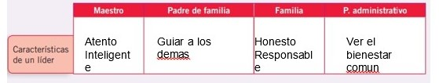
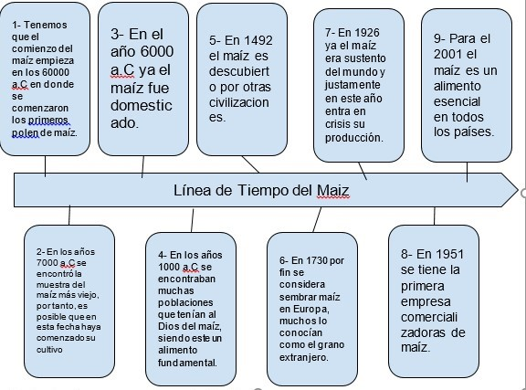

Libros Resueltos de Estudios Sociales
Respuesta de Actividades del Estudios Sociales de Octavo
Elija la Unidad:
BLOQUE 1: HISTORIA E IDENTIDAD.
1. ESTUDIAR HISTORIA
Indagación• Investiga acerca de grupos humanos que influyeron en la historia del mundo.
Entre los grupos humanos que influyeron en la historia del mundo destacan los pueblos egipcio, romano, griego, español y judío, entre muchos otros. Se trata de civilizaciones extraordinarias cuyo pensamiento y cultura aún asombran al mundo.
Actividades
Ubica
Elabora una línea de tiempo de tu existencia. Inicia con tu nacimiento y continúa con los eventos importantes de tu vida, hasta la actualidad.
Busca en tu entorno alguna persona que tenga más de sesenta años. Plantéale una entrevista. Fíjate en las sugerencias que se detallan a continuación para desarrollar tus preguntas. Pon un visto al lado de cada pregunta, una vez que las hayas formulado en tu entrevista. Añade también las preguntas que se te ocurran, según lo que te cuenten
Entrevista a un abuelo
¿Tenían tiempo libre cuando eran niños o niñas?
No mucho
¿Qué hacían en su tiempo libre?
Jugábamos con el trompo o bolillas
¿Cuál era su juego favorito?
Las escondidas
¿Por qué les gustaba tanto?
Porque era divertido esconderse y estar buscando
¿De qué se trataba el juego?
Se trataba en si, de esconderse mientras el que cuenta hasta 100 luego tiene que buscar.
Desarrolla tablas que te permitan comparar cómo se utilizaba el tiempo libre hace cincuenta años y cómo es ahora. Conversa con tus compañeros y compañeras sobre las razones por las que se dan esas semejanzas y diferencias a través de los años.
Identifica de qué manera les puede ser útil, hoy en día, la información que han recibido. A continuación se detallan algunas ideas, pero si encuentras otras, también son válidas.
¿Esta investigación me brindó nuevas ideas de cómo usar mi tiempo libre?
si
¿Este trabajo me permitió entender un poco más a mis abuelos?
si
¿Descubrí que también los viejitos fueron niños y que no somos tan diferentes?
Si, los tiempos cambian todo es mas moderno
¿Identifiqué, gracias a este trabajo, algún juego popular que valdría la pena que lo recordemos?
Si, como las escondidas
2. EL ORIGEN DE LA HUMANIDAD
Razonamiento
• ¿Cuáles fueron las razones para que el Homo sapiens sobreviviera?
El homosapiens sobrevivió porque se adaptó a las condiciones en las cuales vivía, buscando la forma de alimentarse, resguardarse y vestirse, esto quiere decir que evolucionó. Actividades
Completa, en tu cuaderno, el siguiente cuadro en base a la información del texto, y haz un gráfico de la evolución humana:
¿Cuáles son los detectives del pasado? ¿Cuáles son las actividades que realizan para comprender la historia? Completa un cuadro similar:

Completa: Evolución del hombre

Gráfica
•Elabora un gráfico que identifique las actividades que hacen: el arqueólogo, antropólogo, físico, paleontólogo, geólogo, biólogo y genetista:

3. SURGIMIENTO DE LA AGRICULTURA Y LA ESCRITURA
Actividades
Interpreta
•Selecciona una imagen del texto sobre la agricultura, describe la imagen que observas e indica cómo se relaciona con el tema.

La agricultura siempre ha sido parte de la producción agrícola del país, en este caso si vemos la relación que tiene en el libro la producción de papa en andinoamérica, es semejante a la situación que vive el país en lo que se trata de producción agrícola en la sierra ecuatoriana siendo uno de los productos más producidos en la sierra
Realiza un collage con fotografías de los nuevos inventos para mejorar las herramientas. Utiliza diversos materiales (plastilina, lodo, arcilla) y haz cuñas como las que describe el texto

Selecciona plantas y animales del cuadro de especies domésticas del texto y ubica en un mapa del mundo, de acuerdo a la zona correspondiente

• Mediante cuatro secuencias, grafica los cambios que significó la revolución agraria.
Encuentra las causas y los efectos que produjo la revolución agraria en la humanidad.
Utiliza el siguiente esquema y dibújalo en tu cuaderno.
- Completa la información de acuerdo al ejemplo:
Observa las imágenes de las páginas 21, 22 y 23 e interpreta lo que veas en cada una de ellas. Escribe las conclusiones de tu análisis, tomando en cuenta las escenas, desde las más cercanas a las más lejanas, y ubícalas en su contexto histórico.
Evaluación de Los orígenes
Completa
Llena los espacios con las palabras que den sentido al contexto: Las grandes ruinas de pueblos y civilizaciones son estudiadas gracias a la _______; para hacer una reconstrucción del pasado los _______ estudian documentos escritos, monumentos, instrumentos de trabajo que se guardan en _______ y _______ para preservarlos de la mejor manera.
Solución:
a) Arqueología - historiadores - archivos - museos
Relaciona
Une los antecesores del hombre con sus características:
Solución:
c) 1c, 2b, 3a
Analiza
Anota los cambios en la vida del ser humano que trajo la revolución agrícola:
Ser sedentarios hacer sus propias casas quedarse en un solo sitio poder almacenar comida aumentar la población y después de lo que surgió la agricultura que vino a ser producto de la mujer porque ella se dio cuenta que germinaba la semilla después de eso vino la escritura
4. IMPERIOS DEL MEDIO ORIENTE
Aplicación del conocimiento
•Elabora un collage con los aportes significativos de cada imperio que se estudia en el tema.
Completa
• En tu cuaderno, elabora el cuadro de doble entrada con los principales aportes de cada civilización
| Caracteristicas | Ubicación | Aporte | Religion | |
|---|---|---|---|---|
| Sumeria | Fueron la primera y más antigua civilización que existió | Ubicada en la parte sur de Mesopotamia, en el Medio Oriente, en las planicies aluviales de los ríos Tigris y Éufrates | La aritmética, álgebra, geometría, el sistema sexagesimal, la rueda, la escritura, además de la astronomía, técnicas de construcción y regadío. | Los sumerios hablaban su propia lengua y tenían su propia religión, que era central en su ordenamiento social. |
| Egipto | Alcanzó un gran desarrollo en las ciencias, el arte, la religión y el comercio. Se destacó por la majestuosidad de sus monumentos cubiertos de jeroglíficos tallados en sus paredes (que son las principales fuentes de información para los arqueólogos). | Los egipcios tenían una ubicación privilegiada en el Mediterráneo. En pleno desierto, al noreste del continente africano, construyeron los cimientos de la sociedad más grande de la historia de la humanidad. | Algunos de sus avances tecnológicos fueron vitales para el desarrollo de esta civilización. Para la agricultura, la cual era la base de la economía, inventaron el arado y la azada. Además, gracias a un mecanismo llamado Shaduf, llevaban agua del río Nilo a los canales que ayudaban al riego. | La religión es un factor fundamental de la cultura egipcia y es muy difícil de comprender. Se trata de una religión politeísta, pero con tendencia al monoteísmo ya que cada nomos (o pequeña región) tenía un dios al que rendía culto principalmente y luego rendía culto a los demás de manera secundaria |
| Imperio Persa | Tolerancia religiosa y de las costumbres locales.
Mantenimiento de estructuras administrativas locales. División del territorio en Satrapías que eran auditadas todos los años siendo castigado el Sátrapa si la población no estaba contenta con su gestión. Sustracción impositiva del comercio y baja general de todos los impuestos. Simplificación del comercio mediante construcción de caminos y canales navegables además de la unificación territorial que hacía menos peligrosos los viajes |
tuvieron como escenario geográfico a la Meseta del Irán, en el Asia Central. Su territorio limitaba por el Norte, con el Mar Caspio y el Turquestán; por el Sur, con el Golfo Pérsico y el Mar Arábigo, y por el Oeste, con Mesopotamia. Los persas vivían donde ahora se encuentra el actual país de Irán. | Métodos de arquitectura y construcción. Ampliación de comercio tipo oferta y demanda. Utilización de sistemas de correo, bancos y dineros físicos | La religión principal de la antigua Persia era el zoroastrismo, pero después del siglo VII fue reemplazado lentamente por el islam, que alcanzó la mayoría en el siglo X. |
Investiga en internet autores y obras que hayan tratado este tema.
¿Cuál de las versiones te parece la más acertada?
Puede ser probable, pero se tiene que igual hacer énfasis que en esos tiempos el desarrollo matemático ya estaba desarrollado y de esa manera se las ingeniaron para construir los diferentes edificaciones
¿Cuáles crees que son las formas de esclavitud que existen actualmente? Argumenta tu respuesta.
• El trabajo en servidumbre: se refiere a las personas que contraen un préstamo o tienen cargar con una deuda y se ven obligadas a trabajar muchas horas, en pésimas condiciones y por un salario irrisorio para hacer frente a estos pagos.
• El trabajo forzoso: personas que se ven obligadas a trabajar por la fuerza por organizaciones, gobiernos o individuos en diferentes contextos como campos de concentración, explotaciones agrícolas, fábricas, barcos pescantes…
• La explotación sexual: es la explotación de mujeres, niños y niñas para ejercer la prostitución e intercambiar servicios sexuales a cambio de dinero. Esta es una de las principales formas de esclavitud moderna y la más lucrativa de todas. Es un tema que en Ayuda en Acción conocemos bien, porque trabajamos con mujeres víctimas de trata con fines de explotación sexual en países como Nepal, brindándoles apoyo psicológico y formativo en casas de acogida, para que sean capaces de salir de esa situación y construir un futuro digno.
¿Por qué crees que las primeras civilizaciones se asentaron cerca de los ríos? Escribe las ventajas y desventajas de esta ubicación.
5. LOS ANTIGUOS IMPERIOS DEL ASIA: CHINA, INDIA
Razonamiento
•Piensa sobre las bases sólidas que tienen las culturas de China e India para mantenerse unidas.
Las culturas de ambas naciones se mantienen unidas porque las costumbres a las que están arraigadas están valoradas con mucha fe. Los rituales y los cultos sagrados son milenarios y ellos respetan sus creencias.
Actividades
Lee e interpreta
•Lee la información sobre el curioso caso de Japón.
• En tu cuaderno, realiza un gráfico de secuencia que contenga la evolución histórica del Japón. Introduce datos adicionales.
Compara el pasado y el presente
• Selecciona cinco inventos de la antigua China.
• A partir de cada uno de ellos, responde a la siguiente pregunta:
¿Qué diferencias habría hoy, en tu vida cotidiana, si no se hubiere realizado este invento?
La pólvora. (No se hubieran inventado las armas o no habria juegos artificiales)
La brújula. (No nos podriamos guiar, los barcos principalmente)
El papel. (No tendriamos Libros ni cuadernos)
La seda. (No se podrian hacer algunas prendas de vestir)
Los billetes (Los intercambios de productos serian como el trueque y no por divisas)
Investiga
•Consulta sobre el budismo.
Si bien el budismo es considerada como religión no teístas, sí aceptan la creencia en realidades espirituales, como el renacimiento, el karma y la existencia de seres espirituales, como espíritus y deidades pero no rinden culto a los dioses que son vistos como de naturaleza permanente, las deidades son seres iluminados
•¿Sabías que no todas las religiones creen en un solo Dios? A los budistas, por ejemplo, les extraña muchísimo este concepto. Si no creen en Dios, ¿qué sustenta su religión? Averigua en qué consiste su filosofía. Socializa la información con tus compañeros.
La principal preocupación del budismo siempre fue la liberación del sufrimiento (nirvana) y el camino hacia esa liberación, que consiste en acción ética (sīla), meditación y sabiduría (prajña, saber «las cosas como realmente son», sct. yathābhūtaṃ viditvā). ... El pensamiento budista es transregional y transcultural.
• Investiga: ¿A qué se refiere el concepto de la ahisma hindú?
Ante la magnitud de la violencia desplegada por el ser humano a lo largo de los siglos, algunas sociedades como la india, han introducido en sus creencias un factor de respeto por cualquier tipo de vida: “no-violencia” (ahimsâ). Los textos hindúes consideran la oposición a la violencia como la virtud más elevada.
¿Por qué la mayoría de las personas que habitan en la India han sido, históricamente, vegetarianas?
La mayoría de las personas que habitaban en la India han sido históricamente vegetarianos porque en su cultura existen muchos animales que son sagrados y en esta región, en general, se respeta a los animales y se busca un equilibrio con la naturaleza.
El autor menciona al lenguaje, tanto oral como escrito, como elemento unificador del territorio del gran Imperio chino. ¿Sabes lo que quiere decir elemento unificador?
Los elementos unificadores son conocidos como el arte y la arquitectura para el territorio heterogéneo, pues le dieron un carácter unitario a todo el imperio. Desde la época de Alejandro Magno que ha dejado su huella por donde pasará, concentrándose principalmente en las zonas al oriente del Mediterráneo
Ordenen entre compañeros: ¿Cuál de estos elementos son los más importantes para integrar a los habitantes que conviven en un mismo territorio?
1. Valores
2. Tradiciones y costumbres
3. Composición étnica
4. Religión
5. Historia
6. Aspiraciones
Investiguen uno de los siguientes roles e interprétenlo:
Esclavos que participaron en la construcción de la muralla.
Planteen, por escrito, ideas que les permita:
- Identificar el rol que desempeña cada personaje.
Su rol era importante ya que eran los que realizaban la construcción o edificación de tal muralla , que se construyó con el fin de proteger la frontera norte del Imperio chino durante las sucesivas dinastías imperiales de los ataques de los nómadas xiongnu de Mongolia y Manchuria
Reconocer las dificultades y las gratificaciones que debe haber traído para su vida la construcción de la muralla.
Las dificultades que se presentaron en su construcción fueron los accidentes del terreno como la elevación, las pendientes, el tipo de suelo y el clima, todo esto contribuyó a dificultar su construcción.
Las gratificaciones se dieron por la protección efectiva de sus fronteras, ya que en las cimas de los montes se construyeron fortificaciones que mantenían una buena vigilancia del terreno y era allí dónde residían los soldados y se almacenaban las provisiones y armamentos.
• Escriban una reflexión en su diario personal, y contesten a las siguientes preguntas:
¿Creen ustedes que era necesario que murieran 10 millones de esclavos para que otros tantos millones pudieran vivir?
Pienso que el bienestar general es mucho más relevante que el de los particulares, y que el trabajo de los esclavos en condiciones complicadas se pudo haber evitado, sí, pero dada la época y la cultura chinas, no fue posible, por lo que, si no era necesario, era inevitable, por lo menos
¿Se te ocurre otra alternativa de defensa para China?
Por otro lado, quizás un enfrentamiento frontal hubiera producido más bajas, la decisión tomada fue la correcta, hasta cierto punto
Indaga y expón Escoge una de las culturas estudiadas (China, India y Japón).
Lista los elementos que permitieron el desarrollo de cada una de estas civilizaciones. Incluye aspectos religiosos, económicos y sociales.
Cultura China:
Economía:
En la antigüedad, la economía china estaba basada en la agricultura, siendo sus principales cultivos el trigo, la cebada, el arroz, la caña de azúcar y el té.
Los agricultores les proporcionaban un 10% de sus cosechas al gobierno y altos funcionarios, como pago por poder trabajar sus tierras
Religión:
El budismo, el islam, el catolicismo y el protestantismo están difundidos en China. Además, están el taoísmo, propio de China, el chamanismo, la iglesia ortodoxa oriental y la religión dongba
Social:
En cuanto a la sociedad china, desde siempre ha tenido un carácter prevalentemente agrícola, y se basa en cuatro grandes estratos sociales con una estructura muy jerarquizada.
Tras este primer grupo social se sitúan los Nong, que son los agricultores, la mayor parte de la población.
Cultura India:
Economía:
El desarrollo económico de la India depende en gran medida de la agricultura, la manufactura y los servicios. La economía del país se fundamenta en diversos sectores, entre los que se incluyen la agricultura, la artesanía, el sector textil, la manufactura y numerosos servicios
Religión:
Las religiones de origen indio son las llamadas religiones dhármicas (en sánscrito, dharma significa “religión” o “ley religiosa”). Entre estas doctrinas se encuentran el hinduismo, el budismo, el jainismo y el sijismo, muy arraigadas en la sociedad.
Social:
La sociedad india está basada en la manifestación divina de Brahma de los cuatro grupos que la conforman: de su boca salieron los profesores y sacerdotes, creando la clase brahmana: aquellos encargados de la educación y la enseñanza, así como labores religiosas –profesores, sacerdotes, etcétera
Cultura Japon:
Economía:
Los sectores estratégicos de la economía japonesa son los productos manufacturados y tecnología, sobre todo los vehículos, artículos electrónicos e industria del acero.
Religión:
Las religiones principales de Japón son el budismo y el sintoísmo
Social:
La cultura de Japón es el resultado de un proceso histórico que comenzó con las olas inmigratorias originarias del continente asiático y de las islas del océano Pacífico, seguido por una fuerte influencia cultural proveniente de China.
Esto en efecto dio como resultado una cultura distinta a otras culturas asiáticas.
6. LOS PUEBLOS MEDITERRÁNEOS: GRECIA
Razonamiento
•¿Por qué se dice que un gran aporte de los griegos fue la democracia?
La razón por la cual se dice que un gran aporte de los griegos fué la democracia, es debido a que éste fué un sistema de gobierno que predominaba en la sociedad Griega, y la cual les permitió desarrollarse política, social y económicamente
•¿Sería posible en la actualidad una sociedad democrática en la que existan esclavos?
Actividades
Gráfica
•Dibuja una línea de tiempo de las civilizaciones en torno al Mediterráneo (desde el Imperio de los hititas hasta el Imperio cartaginés). Utiliza los datos del texto para ello:
Investiga
•Compara aspectos entre Esparta y Atenas:
| Aspectos | Esparta | Atenas |
|---|---|---|
| Políticos | Las principales instituciones del gobierno espartano fueron la Asamblea (la "Apella"), el Consejo de Ancianos (la "Gerusía") y 5 éforos o magistrados elegidos anualmente, que eran los que realmente ostentaban el poder. Aunque Esparta contó con reyes, éstos normalmente sólo ejercían el papel de jefes del ejército. | Atenas constituyó el mejor ejemplo de polis con gobierno democrático. Durante la Antigüedad sólo los griegos se rigieron por ese tipo de gobierno.
El sistema democrático ateniense alcanzó su máximo apogeo en tiempos de Pericles, militar y gobernante de gran influencia y prestigio. |
| Militares | Aspectos militares de Esparta: El ejército Espartano era la fuerza militar de la ciudad Esparta. Los Militares eran Espartanos o Espartitas que recibían una ciertas tierras a cambio de sus servicios militares. Los Jenofontes son la principal fuente de conocimiento de los espartanos, y constituían a los lacedemonios. | La unidad del ejército ciudadano ateniense, al igual que prácticamente todos los ejércitos griegos, era el soldado de infantería pesada llamado, hoplita. ... Estos hombres de armas ligeras llevaban los escudos de los hoplitas hasta la batalla, y la mayor parte del equipaje. Tenían jabalinas, hondas, y a veces arcos. |
| Culturales | Monarquía completamente militarizada, todos sus ciudadanos poseían conocimientos y entrenamiento militar, lo cual les permitía estar disponibles siempre para la guerra y su economía incluía a las mujeres en cualquier actividad | También fue un centro cultural donde vivieron muchos de los grandes artistas, escritores y filósofos de la Antigüedad. Estas contribuciones de Atenas al pensamiento de su época tuvieron una gran influencia en el desarrollo de Grecia, de Roma y de la cultura occidental. |
Lee la siguiente información y responde las preguntas:
•¿Cuál es la relación entre el florecimiento cultural y el siglo de oro de Pericles?
La relación que guarda el florecimiento cultural de Atenas y el siglo de oro de Pericles, es que fue gracias a su persona Atenas realmente alcanzó un esplendor jamás visto o repetido en su historia.
• ¿Por qué se construye todo un majestuoso templo en honor de Atenea?
Se construyó todo un majestuoso templo en honor a Atenea debido a que los griegos la consideraban la diosa total sabiduría y la guerra estratégica en su mitología, esta era su protectora, la que les daba la inteligencia para ganar las batallas y esta manera hacerse siempre con las victorias
• ¿Cuáles fueron las características de la estatua de Atenea?
La estatua de Atenea está de pie con manto hasta los pies y en su pecho tiene insertada la cabeza de Medusa de marfil. Tiene una Victoria de aproximadamente cuatro codos y en la mano una lanza; hay un escudo junto a sus pies y cerca de la lanza una serpiente.
Investiga
•Consulta los aportes de Platón y Sócrates al pensamiento filosófico universal.
Platón:
Algunos de los aportes de Platón más importantes a la filosofía fueron la teoría de las ideas, la dialéctica, la anamnesis o la búsqueda metódica del conocimiento.
Al igual que Sócrates antes de él, Platón sentó las bases de la filosofía, política y ciencias occidentales.
Sócrates:
En lo que respecta a su pensamiento como filósofo, Sócrates destacó por centrar su atención en el terreno de la moral y la ética. Consideraba que el ser humano tiende al bien y que todo vicio es producto de la ignorancia. Creía que el bien, el amor, la bondad y la ética partían de definiciones universales.
Una sociedad donde existan esclavos no podría ser democrática por el simple hecho de denigrar un grupo de personas y darle mayor poder a otras
Observen las siguientes imágenes y relacionándolas entre sí. Respondan:
¿Qué estilo es más sencillo?
Estilo Dórico
¿Cuál es el más decorado?
Estilo Corintio
¿Cuál les gusta más?
Estilo Corintio
7. EL IMPERIO ROMANO
Aplicación del conocimiento
•Examina las diversas causas de la caída del Imperio romano y elabora un gráfico explicativo.
La caída del Imperio romano de Occidente (también conocida como la caída del Imperio romano o la caída de Roma) fue el período de declive del Imperio romano en que perdió la autoridad de ejercer su dominio, y su vasto territorio fue dividido en numerosas entidades políticas sucesoras.
Este artículo comienza con una explicación de las fuerzas que le habían permitido al Imperio romano ejercer un control efectivo sobre Occidente; historiadores modernos mencionan factores que incluyen la efectividad y el tamaño del ejército, la salud y el tamaño de la población romana, la fuerza de la economía, la capacidad y competencia de los emperadores, las luchas internas por el poder, los cambios religiosos del período y la eficiencia de la administración civil. El aumento de la presión de los "bárbaros", externos a la cultura romana, contribuyó en gran medida al colapso
Actividades
• Observa la ilustración del soldado romano. Analiza su vestimenta.
Resultado de imagen para vestimenta de soldados romanos antiguos
Una túnica (en latín, tunica).
El balteus, un tahalí o cinturón doblemente usado para guardar las armas y para meter la ropa.
Los braccae (pantalones), usados en climas más fríos.
Las caligae, zapatos de suela pesada o sandalias militares
• Imagina cómo era la vida cotidiana de un soldado romano en batalla. Recuerda que Roma era un imperio que vivía constantemente en guerra.
La vida del soldado romano estaba llena de obediencia solemne al cónsul y responsabilidad con la patria. Los soldados provenían del campo por lo que estaban acostumbrados al trabajo duro, ellos estaban obligados a recibir entrenamientos muy parecidos a los de la actualidad.
• Desarrolla una entrevista imaginaria a un soldado romano. Regístrala por escrito
Preguntas de la Entrevista:
¿Cuántas guerras tienes al mes?
¿Cómo son tus amigos soldados?
¿Cuántas personas has asesinado?
• Imagina las condiciones de la esclavitud de la época.

Revisen los siguientes derechos romanos. Determinen cuál de ellos todavía está vigente y cuál no.
Discutan sobre su conveniencia o no.
1.A no ser encontrado culpable sin juicio-- > Este Derecho tiene vigencia hasta el día de hoy, pues en la mayoría de los paises todas las personas acusadas de un crimen de cualquier naturaleza tiene derecho a un juicio justo.
2.A tomar acción frente a los tribunales de justicia----> Todas las personas pueden llevar a Juicio a otra persona y pedir la intervención jurídica en caso de agravio o cualquier situación que considere que lo amerite.
3. A la apelación sobre las decisiones de magistrados.----> Esta Apelación se realiza mediante un Abogado, y aun está vigente.
4. a no ser torturado ni azotado ----> aun Se encuentra vigente y es regida por los derechos humanos
5. un ciudadano romano no podia ser crucificado---> Actualmente Esto es equivalente a una pena de muerte, la cual esta prohibida en la mayoría de los paises.
8. SURGIMIENTO DEL CRISTIANISMO
Aplicación del conocimiento
•Localiza en el mapa de la página 50 los lugares del mundo donde surgió y se expandió inicialmente el cristianismo
Actividades
Grafica
• Dibuja los símbolos con los que se puede identificar al cristianismo:

Interpreta
• Mediante un mapa mental, registra las características del cristianismo tomando en cuenta los temas: orígenes del cristianismo, los cristianos en Roma y legalización del cristianismo
Realiza una encuesta a cinco personas: maestros, personal administrativo que trabaje en tu plantel y/o a algún familiar, sobre las características que debe reunir un líder en la actualidad:

Registra los datos obtenidos en tu cuaderno.
Con los datos, contesta: ¿Por qué se considera a Jesús como un líder?
Jesus siempre fue una persona que supo ganarse a las personas ya que ha diferencia de muchos líderes el vino a la tierra a servir, de esa manera apoyo a muchas personas y se reconoce como líder
Lee la siguiente información adicional y responde en tu cuaderno las preguntas:
1. ¿Por qué fue necesario que los emperadores se reunieran para tratar la libertad religiosa?
La libertad religiosa fue necesaria debido a la cantidad de muerte por parte de los cristianos para la época
2. ¿Cuál fue la institución creada por Jesucristo?
La Iglesia católica sostiene que en ella subsiste la única Iglesia fundada por Cristo
3. ¿Qué sucede en la actualidad en el país respecto a la práctica religiosa?
La religión es una base central para el juicio moral.
La religión afecta fuertemente las relaciones interpersonales e intergrupales.
La religión brinda una interesante oportunidad para considerar la forma en que las fuerzas culturales moldean la psicología de las personas en formas complejas
Investiga
• Ubica históricamente la vida de Cristo, mediante una línea de tiempo; resume la situación de Palestina en el siglo I. ¿Bajo qué emperadores nació y murió Cristo?
• ¿Cómo se explica la persecución en Roma al cristianismo si siempre fue tolerante con todas las religiones anteriores?
La persecución a cristianos en el Imperio romano, se produjo de forma intermitente durante un período de más de dos siglos entre el Gran incendio de Roma en el año 64 bajo Nerón y el Edicto de Milán en el 313, en el cual los emperadores romanos Constantino el Grande y Licinio legalizaron la religión cristiana.
• ¿Cómo el mensaje cristiano implicaba una transformación social, política y económica del mundo romano?
Jesús de Nazareth, el hijo de Dios es el fundador del cristianismo, el con sus enseñanzas, parábolas, y doctrinas conquisto a un pueblo hostil, cruel y como lo fue el pueblo Romano. Y como consecuencia se extendió por el mundo entero, hasta nuestros días. Logro la unión de las raíces judeo-cristianas en los pueblos greco-romanos, marcando una relación estrecha entre ambos, primeramente social hasta la actualidad.
• ¿Por qué en un inicio los seguidores del cristianismo eran gente sin recursos económicos y poder político?
Porque en los inicios del cristianismo, la mayoría de los seguidores del cristianismo eran gente sin recursos económicos porque Jesús, el creador del mismo, era judío (al igual que sus seguidores) y los judíos eran oprimidos por los romanos.
• Indaga sobre la organización y desarrollo del cristianismo en los primeros tiempos (se sugiere leer algunos pasajes de Hechos de los Apóstoles o Epístolas (Cartas) de San Pablo; haz un esquema que sintetice la información.
• ¿Quién fue San Agustín, su influencia histórica en la Iglesia y en la Edad Media?
San Agustín de Hipona (Aurelio Agustino, 354-430 EC) fue el primer filósofo importante de la era cristiana. Fue el obispo de Hippo Regius en Numidia durante los últimos años del Imperio Romano , y su obra más famosa, La ciudad de Dios , describió lo que él creía que era la causa de este declive.
La influencia de San Agustín en la evolución de la filosofía occidental ha sido tan grande que bien puede decirse que el agustinismo es una constante histórica que informa los más diversos movimientos doctrinales, tanto de inspiración cristiana como de carácter inmanentista.
La filosofía fue para San Agustín el amor y esfuerzo del alma entera hacia la sabiduría y hacia la verdad. La verdad era para San Agustín el ideal supremo al que se entregó con pasión. Esta verdad es la que se refiere al alma y a Dios, los dos objetos de su preocupación filosófica.
Evaluación de Grandes imperios antiguos
Elige
Escoge los elementos que caracterizan a los imperios antiguos del Medio Oriente:
1. Civilización más antigua del mundo.
2. Desarrollaron la filosofía y la democracia.
3. Desarrolló los jeroglíficos como forma de escritura.
4. Se ubicaron en lo que se conocía como la media luna de la tierra fértil.
5. Sus gobernantes eran denominados faraones.
6. Extendieron territorios de Asia a Europa.
Solución:
b) 1, 3, 4, 5
Completa
Llena los espacios con las palabras que den sentido al contexto:
Durante la época de oro de Atenas se construyó el _______, la ciudad se convirtió en un centro artístico y cultural bajo el gobierno de _______; sin embargo, la guerra del Peloponeso enfrentada contra _______ hizo que Atenas pierda su hegemonía sobre el _______ y surja una nueva figura como la de Alejandro Magno en Macedonia.
Solución:
b) Partenón - Pericles - Esparta - Mediterráneo
Sintetiza
Anota las causas que influyeron en que el Imperio romano sea importante y las causas para su caída:
ESPLENDOR:
-Con el ejército el Imperio incrementó.
-Hubo un incremento en el poder del ejército.
-Tuvieron estabilidad y responsabilidad.
-Tuvieron riquezas de los pueblos.
CAÍDA:
-Tuvieron una crisis económica.
-Hubo inseguridad en las fronteras.
-El imperio se dividió en Roma occidente y Roma de Oriente.
9. EL ISLAM Y OCCIDENTE
Indagación
•Averigua algunos principios del islam y compáralos con los de otras religiones.
Los cinco pilares del islam que todo musulmán debe cumplir
Profesión de fe (Shahada)
Oración (Salat)
Caridad (Zakat)
Ayuno (Swan)
Peregrinaje a la Meca (Hajj)
A comparación con la religion catolica en este caso, se cumple la mayoria excepto la ultima(Peregrinaje a la Meca), ya que si existen peregrinos pero son hacia otras posturas de creencias
Actividades
¿Por qué estos conocimientos de los clásicos griegos no se pudieron hacer visibles en Europa durante la Edad Media?
Los conocimientos de los clásicos griegos no se pudieron hacer visibles en Europa durante la edad medida debido a factores como el oscurantismo y la transformación cultural. Además, el conocimiento de los griegos, tuvo gran impacto sobre diferentes culturas, ya fuera de forma directa o indirecta.
En tu cuaderno, establece la relación entre el papel que desempeñó Jesús en el mundo cristiano y Mahoma en el mundo islámico.
• Responde: ¿Cuáles de estos mandamientos son solo exigencias religiosas? ¿Cuáles son también exigencias civiles?
No robarás y no matarás son exigencias civiles ya que también son penadas por la ley
¿Cómo crees que es la vida en un país en que el poder civil y el religioso se funden en uno solo?
Sería dominada por la iglesia y muy probable no existiría tanta corrupción
10. LA SOCIEDAD FEUDAL
Razonamiento
•Observa el infográfico sobre el señor feudal y compara la situación de esa época con la actual.
El Señor Feudal: Era aquella persona Acomodada Económicamente Dueño de tierras e influencia en la sociedad, que contrataba a personas para trabajar sus tierras a cambio de pagos o servicios.
Actualmente los señores Feudales no estan en vigencia, pues actualmente la clase obrera tiene mucha mayor protección que en aquella época, las personas tienen un salario justo según sus destrezas y capacidades y horas de trabajo razonables.
•Responde: ¿Cuáles son las diferencias y las semejanzas del pasado con la actualidad?
Semejanzas:
Existe la estratificación social.
Se promueven los medios productivos.
El capital esta por encima de la mano de obra humana.
Los recursos naturales y su explotación son fundamentales para la producción.
Diferencias:
El feudalismo ofrece menos derechos que el capitalismo.
En el capitalismo se genera una relación laboral mientras que en el feudalismo se genera una relación vasallo-señores.
La productividad del capitalismo es más efectiva que la del feudalismo.
Actividades
• Detalla en tu cuaderno las actividades que se realizan en las catedrales.
Las principales actividades que se realizan en las catedrales son:
La oración de la santa misa.
Estudios de teología, gramática y latín.
Las catedrales fueron los principales recintos de educación, muchas universidades comenzaron sus enseñanzas en las catedrales.
Reuniones importantes entre el Clero y la nobleza.
Fiestas y celebraciones religiosas.
Investiga
• ¿Por qué a la Edad Media se la llama la época del “oscurantismo”?
Se dice que la Edad Media es el máximo período del oscurantismo porque es una época que de cierta forma estuvo opuesta a la expansión del libre pensamiento, del avance científico en las direcciones que consideraran no convenientes. Se asocia oscurantismo a una época de hambre, represión, oscuridad, falta de libertad.
•¿En qué consisten las diferencias entre las relaciones de servidumbre y de vasallaje?
Debe evitarse la usual confusión con el vasallaje, otro tipo de sometimiento a un señor, pero mediante una relación política y militar entre miembros del mismo estamento, es decir: el vasallo es un noble (o un eclesiástico) y por tanto un privilegiado, mientras que el siervo pertenece al Tercer Estado o pueblo llano.
•En tu cuaderno, elabora un diagrama de Venn en el que se identifiquen las diferencias y semejanzas entre los esclavos y los siervos. Coloca las semejanzas en el medio.
Interpreta
• En tu cuaderno, realiza un cuadro cronológico de las invasiones germanas que contenga ilustraciones con dibujos o recortes.
1939
1 septiembre : Alemania, bajo las órdenes del Führer, Adolf Hitler, invade Polonia. Comienza la Segunda Guerra Mundial.
3 septiembre: Gran Bretaña, Francia, Australia y Nueva Zelanda le declaran la guerra a Alemania.
10 septiembre: Canadá le declara la guerra Alemania.
17 septiembre: La Unión Soviética invade Polonia desde el este.
27 septiembre: Varsovia, la capital polaca, se rinde.
30 noviembre: La Unión Soviética invade Finlandia.
1940
12 marzo: Finlandia firma un tratado de paz con la Unión Soviética.
9 abril : Alemania comienza la ocupación de Dinamarca e invade Noruega.
10 mayo : Alemania invade Bélgica, Holanda y Luxemburgo.
10 mayo: El primer ministro británico, Neville Chamberlain, dimite y es sustituido por Winston Churchill.
15 mayo: Holanda se rinde ante Alemania.
27 mayo: Bélgica se rinde ante Alemania.
10 junio: Italia declara la guerra a Gran Bretaña y Francia.
18 junio: La Unión Soviética invade los países bálticos.
22 junio: Francia firma un armisticio con Alemania.
10 julio: Comienza la Batalla de Inglaterra.
11 julio: El mariscal francés Philippe Pétain se convierte en jefe del Gobierno de Vichy
13 septiembre: Italia invade Egipto.
27 septiembre: Alemania, Italia y Japón firman el Pacto Tripartito.
23 octubre: Franco y Hitler se reúnen en Hendaya para tratar asuntos estratégicos.
28 octubre: Italia invade Grecia.
14 noviembre: El ejército griego repele a los italianos y los fuerza a retroceder.
1941
1 marzo: Bulgaria se une a las potencias del Eje.
30 marzo: Las Afrika Korps (fuerzas expedicionarias alemanas) comienzan su ofensiva en el norte de África.
6 abril: Alemania invade Yugoslavia y Grecia.
10 abril: Alemania ocupa Zagreb (Croacia).
12 abril: Alemania ocupa Belgrado (Serbia).
13 abril: Los soviéticos y los japoneses firman un Pacto de Neutralidad.
17 abril: El ejército yugoslavo se rinde ante los alemanes.
27 abril: Los alemanes ocupan Atenas.
8 junio: Las fuerzas aliadas invaden Siria.
22 junio: Comienza la Operación Barbarroja: Alemania invade la Unión Soviética.
22 junio: Italia y Rumanía le declaran la guerra a los soviéticos y al día siguiente se unen Hungría y Eslovaquia y el 26, Finlandia.
15 septiembre: Comienza el Sitio de Leningrado.
19 septiembre: Kiev, la capital de Ucrania, es ocupada por los alemanes.
25 noviembre: Los alemanes atacan Moscú.
5 diciembre: Los alemanes detienen su ofensiva contra Moscú.
7 de diciembre: Japón ataca la base estadounidense en el Pacífico de Pearl Harbor y declara la guerra a Estados Unidos.
8 diciembre: Los Aliados (excepto los soviéticos) le declaran la guerra a Japón.
11 diciembre: Alemania declara la guerra a Estados Unidos.
25 diciembre: Los japoneses ocupan Hong Kong.
1942
2 enero: Los japoneses ocupan Manila (Filipinas).
11 enero: Los japoneses capturan Kuala Lumpur (Malasia)
15 febrero: Singapur cae en manos japonesas.
8 marzo: Los japoneses entran en Rangún, capital de Birmania.
28 mayo: Los alemanes derrotan a los soviéticos en Kharkov.
4 junio: Batalla de Midway (océano Pacífico): 4 portaviones japoneses hundidos.
3 julio: Sebastopol (URSS) bajo control alemán.
23 octubre: Comienza la batalla de El Alamein (Egipto).
8 noviembre: Comienza la Operación Torch: los Aliados invaden el noroeste de África.
1943
14 enero: Comienza la Conferencia de Casablanca: El presidente de EE. UU., Franklin Delano Roosevelt, exige "la rendición incondicional".
31 enero: Capitulación alemana en Stalingrado (URSS).
12 mayo: Rendición de las fuerzas del Eje en el norte de África.
25 julio: Derrocamiento del gobierno fascista italiano de Benito Mussolini.
3 septiembre: Italia firma el armisticio.
10 septiembre: Los alemanes ocupan Roma.
23 septiembre: Mussolini declara la instauración de un gobierno fascista en el norte de Italia.
13 octubre: El gobierno oficial italiano declara la guerra a Alemania.
Nov-dic: Conferencia de Teherán: Rooswelt, Churchill y Stalin.
1944
27 enero: Finaliza el Sitio de Leningrado.
10 abril: Los soviéticos ocupan la ciudad de Odessa (Ucrania).
9 mayo: Sebastopol cae en manos de los soviéticos.
6 junio : Arranca la Operación Neptuno/Overlord: La decisiva invasión aliada de Normandía (Francia).
27 junio: El ejército estadounidense ocupa Cherburgo (Francia).
20 julio: La Operación Valkyria (el intento de asesinato de Adolf Hitler) fracasa.
25 julio: Comienza la Operación Cobra: ofensiva aliada para romper las defensas alemanas en Normandía.
15 agosto: Operación Anvil (Yunque): desembarco aliado en el sur de Francia.
25 agosto: Los Aliados entran en París.
30 agosto: Los alemanes abandonan Bulgaria.
31 agosto: Los soviéticos se hacen con Bucarest (Rumanía).
3 septiembre: Amberes y Bruselas son liberadas.
1 octubre: Las fuerzas soviéticas entran en Yugoslavia.
14 octubre: Atenas es liberada.
20 octubre: Liberación de Belgrado.
16 diciembre: Ataque alemán a través de las Árdenas (Bélgica, Luxemburgo y una parte de Francia): comienza la Batalla de las Ardenas.
1945
1 enero: Los alemanes se retiran de las Árdenas.
17 enero: Los soviéticos ocupan Varsovia.
26 enero: Los soviéticos liberan el campo de Auschwitz (Polonia).
13 febrero: Comienzan los bombardeos aliados masivos de la ciudad alemana de Dresde (Alemania).
4 al 11 febrero: Conferencia de Yalta (URSS) entre Stalin, Churchill y Roosevelt, como jefes de gobierno de la URSS, del Reino Unido y de Estados Unidos, respectivamente. Comienza la Guerra Fría.
19 febrero: EE. UU. llega a Iwo Jima (Japón).
12 abril: El presidente estadounidense Roosevelt fallece y le sucede Harry S. Truman.
23 abril: Los soviéticos entran en Berlín.
28 abril: Mussolini es capturado por partisanos y posteriormente ejecutado.
30 abril: Hitler se suicida en el búnker de la Cancillería del Reich en Berlín.
2 mayo: Rendición de las fuerzas alemanas en Italia.
4 mayo: Rendición de las fuerzas alemanas en Holanda y Dinamarca.
5 mayo : Alto el fuego en el Frente Occidental.
8 mayo: Alemania firma la paz sin condiciones. "Día de la Victoria en Europa"
9 mayo: Los soviéticos ocupan Praga.
17 jul- 2 ago: Conferencia de Postdam, (cerca de Berlín), los jefes de Gobierno de las tres potencias ganadoras, Truman (EE. UU.), Stalin (URSS) y Churchill-Clement Attlee (G. Bretaña), deciden tras la rendición alemana, su administración así como el nuevo orden mundial
6 agosto: EE. UU. lanza la primera bomba atómica de la historia sobre la ciudad japonesa de Hiroshima.
9 agosto: Lanzamiento de la segunda bomba atómica sobre Nagasaki (Japón)
14 agosto: Capitulación de Japón.
2 sep: Japón firma la Paz sin condiciones. Fin de la Guerra. EFE
11. FIN DE LA EDAD MEDIA
Razonamiento
•¿Crees que se justifican las denominadas “guerras santas” cuando causan muchas muertes y destrucción?
Se ha utilizado la idea de «guerra santa» en épocas diversas y en numerosos conflictos, religiosos o no, normalmente para legitimar intereses geopolíticos o económicos. Son ejemplos clásicos de guerra santa las cruzadas o las guerras católicas contra las consideradas herejías (cátaros, protestantes, etc.). La guerra civil española se puede considerar cruzada porque la lucha tuvo por objeto liberar territorios que otro día fueron cristianos y de los que se hicieron dueños los enemigos de la fe, destruyendo todo el testimonio o vestigio del cristianismo por oídium fidei. Aunque oficialmente no fue declarada cruzada por el pontífice Pío XII, así se la denominó oficiosamente durante la dictadura de Francisco Franco.
•¿Cómo los prejuicios religiosos han promovido la discriminación de las mujeres y, en general, de personas que tienen actitudes, creencias, opciones y pensamientos diferentes?
A discriminación social inquieta a los organismos públicos en Europa ya que debilita el tejido y la cohesión social. Este fenómeno puede ser abordado desde dos lecturas; la perspectiva psicosocial, en que se destacan los mecanismos cognitivos que nos permiten comprender y relacionarnos con el mundo y sus objetos; y una perspectiva macrosocial que permite dar cuenta de las estructuras sociales e ideológicas que sustentan esos mecanismos. Dos estudios empíricos apoyan esta investigación
Actividades
Alcalde:
El Alcalde inauguró las diferentes obras en el Cantón
Almacén:
El almacén de al lado fue clausurado por no pagar sus impuestos.
Almohada:
La almohada está húmeda porque había un agujero en el techo.
Arroz:
La libra de arroz subió de precio por el alza de combustible
Influencia:
La influencia que tienen los youtubers en los jóvenes es impresionante
Arancel:
El arancel que se está cobrando a los productos de china son muy altos
Zaguán:
La pelota está ubicada en el Zaguán
Azotea
Un chico se quiso lanzar de la azotea
Almíbar:
El almíbar tiene un sabor distinto dependiendo en donde los esparsas
Ajedrez:
El Ajedrez es uno de los juegos de mesa más famosos en todo el mundo
Azar:
Los contrincantes del otro equipo fueron elegidos al azar.
Taza:
La taza se quebró al momento que la traslade a su sitio
Dibuja una casa con elementos árabes: puertas de hierro forjado, uso de arcos, patio en el interior con una pila o fuente de agua en el centro.
Adorna las paredes con figuras geométricas decorativas.
Responde:
¿Dónde has visto algo similar?
La arquitectura tiene un parecido similar de las ventanas de los edificios gubernamentales en Quito en su minoria , ya que con el tiempo van remodelando edificios por el tiempo que tienen vigentes
¿Cómo llegó la influencia árabe a nuestro medio?
Con la llegada de los primeros árabes a la península ibérica, la influencia árabe empieza en el año 711, a través del estrecho Gibraltar, viéndose el avance musulmán frenado en Poitiers el año 732.
12. EL RENACIMIENTO Y EL HUMANISMO
Razonamiento
•¿Por qué se llama humanismo a la tendencia reformista de finales de la Edad Media?
Se llama humanismo a la tendencia reformista de finales de la edad media porque se enfoca en el humano.
Como parte de eso, el humanismo promueve el retorno de la cultura greco-latina, para la renovación de los valores humanos.
•¿Hay elementos del humanismo que tienen vigencia en la actualidad?
Actualmente estos son los elementos más vigentes del humanismo: Propicia la ubicación del ser humano como valor y preocupación central, de tal modo que nada esté por encima del ser humano, ni que un ser humano esté por encima de otro.
•Investiga qué es el antropocentrismo y el androcentrismo, y cómo se relacionan estos conceptos con las diferentes formas de violencia.
Antropocentrismo
Concepción filosófica que considera al ser humano como centro de todas las cosas y el fin absoluto de la creación.
androcentrismo
Tendencia a considerar al hombre como centro o protagonista de la historia y la civilización humanas en detrimento de las mujeres, cuya importancia se rebaja o no se tiene en consideración.
Estos conceptos no tienen directamente que ver con la violencia, pero sí tienen que ver con la concepción del ser humano en el mundo, y podríamos inferir que a través del androcentrismo se podría imponer algún tipo de violencia sobre la mujer.
Actividades
En tu cuaderno, elabora un esquema similar para relacionar los conceptos de humanismo y Renacimiento en semejanzas y diferencias.
Observa la imagen del texto: “El talento creador del Renacimiento”, infiere las características de este período y anótalas en tu cuaderno.
En tu cuaderno, escribe los aportes fundamentales del Renacimiento en los aspectos:
Aspectos Políticos:
-Monarquías autoritarias:
Las monarquías feudales se transformaron en monarquías autoritarias en las que el rey reforzó su poder aún con ciertos límites.En el siglo XVI el italiano Maquiavelo en su obra El Príncipe ,afirmó que los monarcas podían incluso realizar acciones amorales si estas eran en beneficio del Estado,por eso se le adjudicó la frase "El fin justifica los medios".
-Los instrumentos del poder monárquico:
Unificaron el territorio.
Sometieron todos los poderes a la autoridad del rey.
Mejoraron la administración.
Implantaron un ejército permanente.
Organizaron las relaciones internacionales a través de la diplomacia.
Aspectos Económicos:
Las actividades agrarias.Continuaron siendo muy productivas.
La artesanía.Incrementó la producción
El comercio.Alcanzó en esta época un gran auge, todo ello favoreció el inicio del capitalismo comercial, es decir, la formación de grandes capitales procedentes del comercio.
Existieron dos rutas comerciales:
El comercio Mediterráneo.Fue perdiendo importancia ante la amenaza turca.
El comercio Atlántico se centró en los puertos del Mar del Norte, en Lisboa y en Sevilla, y alcanzó un gran desarrollo a partir de la creación de los imperios coloniales portugués y castellano.
Aspectos Sociales:
La sociedad siguió siendo estamental, aunque experimentó cambios.
La nobleza y el clero. Acabaron sometidos al poder del rey, pero continuaron siendo grupos privilegiados.
La burguesía. Se convirtió en el grupo ascendente, debido a su enriquecimiento con el comercio, los negocios y la banca.
El campesinado de Europa Occidental. Se emancipó de la servidumbre.
Observa la imagen La escuela de Atenas. Describe los elementos que contiene la imagen y explica: ¿Cómo se ven reflejados los elementos del arte renacentista?
El humanismo tenía como centro el estudio del hombre en los siglos XIV y XV en el transcurso del tiempo ¿Crees que esa conciencia se ha cumplido? Anota tus reflexiones en un párrafo en tu cuaderno.
No se ha cumplido en su totalidad, pero sí se dio, porque los principios de esta corriente fueron en ascenso progresivo durante ese período, es decir, la religión se fue alejando, y el hombre como centro de la universidad fue tomando una posición más importante.
El humanismo se denomina como el antropocentrismo frente al teocentrismo medieval, donde sitúa al ser humano como medida y centro de todas las cosas.
Este humanismo se basaría en la esencia de la libertad, la independencia, y la apertura, rompiendo así con los dogmas religiosos.
Evaluación de La Edad Media
Elige
Escoge las características del islam:
1. Ligado al poder político.
2. Se propagan las hambrunas y pestes.
3. Dirigidos por los califas.
4. Principal ciudad La Meca.
5. Se crean catedrales y universidades.
6. Mahoma creó la religión monoteísta.
Solución:
b) 1, 3, 4, 6
Completa
Llena los espacios con las palabras que den sentido al contexto: Las cruzadas, denominadas guerras en nombre de Dios, fueron en total _______; el papa, _______, convocó a los cristianos para recuperar la tierra _______ para la cristiandad occidental. Los soldados católicos llevaban una _______ para distinguirse de sus enemigos
Solución:
b) nueve - Urbano II - santa - cruz
Determina
¿Qué aspectos influyeron para llegar al fin de la Edad Media?
El fracaso de las Cruzadas , mermó el poder de la iglesia. -Los privilegios de la iglesia. -La ciudades recuperan poder, gracias al impulso del comercio. -Las ideas humanistas se expedían por todo los reinos
13. LOS PRIMEROS POBLADORES DE AMÉRICA
Aplicación del conocimiento
• Interpreta los mapas de las cuatro fases del estrecho de Bering; cómo fue cambiando y facilitando el ingreso del hombre de Asia a América.
El puente de Bering, se cree que fue el camino por el cual los primeros seres humanos, provenientes de Asia pasaron por Europa y poblaron a América desde el norte.
Los cambios en las fases de el puente de Bering, fueron quienes dieron lugar a que esto fuera posible, debido a que existen sólidas evidencias de que el nivel de los océanos ascendió y descendió en varias ocasiones, de modo que durante la última glaciación la concentración de hielo en los continentes causó que los niveles de el mar descendieran 120 metros dejando conexiones terrestres entre varios lugares.
Actividades
Representa, por medio de un dibujo, cómo pudo ser un día común en la vida de los primeros pobladores. Recuerda que se movían en bandas. ¿Cuál habrá sido la función que cada uno desempeñaba en esas bandas? ¿Quién hacía las armas? ¿Quién cazaba? ¿Quién recolectaba frutos silvestres? ¿Qué habrán hecho con los bebés y los ancianos? ¿Habría ancianos o se morían muy jóvenes?
los hombres despertaban a sus hijos, araban la tierra , hacían sus armas y cazaban
las mujeres ayudaban a los ancianos y cuidaban a los bebes preparaban la comid
los niños recogían leña para los ancianos, lavaban, trabajaban con los padres y trabajaban por obligación
los ancianos prendían el fuego enseñaban a los niños miraban a las mujeres trabajar y descansaban
• ¿Cómo crees que se hacían y se usaban las armas y otros instrumentos para la caza y la pesca?
Se utilizaban rocas y huesos de animales para hacer los instrumentos que requerían filo como los cuchillos o las lanzas. Los maderos fueron usados con instrumentos de caza con el objetivo de causar golpes contundentes, como eran los mazos o garrotes. Las fibras naturales sirvieron para desarrollar las primeras redes de pesca, y fueron usadas junto con diversos métodos como la creación de pequeñas represas en ríos y el uso de lanzas como arpones.
• ¿Por qué las bandas de los primeros pobladores estaban conformadas por grupos de más o menos ochenta personas?
Porque era el numero óptimo de personas que se requería para cumplir con las diversas tareas que se requerían.
• ¿Qué hubiera ocurrido si se formaban bandas pequeñas de diez personas o grandes de 500? ¿Habrían podido organizarse para cazar? ¿Habrían tenido comida suficiente para todos?
Si los grupos hubieran sido muy pequeños, se hubiera dificultado la división de las labores en la banda, además que sería más difícil organizarse para cazar y reponerse de las bajas eventuales.
Si los grupos fueran más grandes, sería más difícil alimentarse, causando escasez de comida en el medio eventualmente, siendo imperante volverse nómadas para subsistir
A lo largo de la historia, los seres humanos han realizado grandes desplazamientos como, por ejemplo, desde Canadá hasta la Patagonia. ¿Cuál crees que es la principal razón que determina estos desplazamientos?
La primera razón que determina el desplazamiento de los seres humanos a lo largo de toda la historia es la necesidad.
Debido a que el ser humano busca sobrevivir y mejorar su calidad de vida el mismo busca el mejor sitio donde pueda vivir y desarrollarse de una manera óptima y plena, en donde tenga mejores oportunidades de vida.
Un ejemplo referente a la pregunta sería la situación que se vive en Venezuela en la actualidad en donde la gran mayoría tuvo que emigrar para poder darle una mejor calidad de vida a su familia y a sí mismo.
14. SURGIMIENTO DE LA AGRICULTURA
Indagación
• Busca recetas que contengan maíz y yuca que se preparen en diferentes países de América. Socialízalas en clase
Maiz:
TAMAL DE POLLO DE LA ABUELITA
Yuca:
Yuca Asada con Mantequilla Manaba
Actividades
• En tu cuaderno, escribe características que identifiquen al período formativo.
Es el primer periodo que divide la prehistoria de América.
Es el periodo de la prehistoria americana más extenso.
Abarca desde el año 1500 a.C. hasta el año 292.
En este periodo el hombre comienza la práctica agrícola y a formar las primeras civilizaciones.
• Elabora una línea de tiempo del aparecimiento y secuencia de la evolución del maíz.

• Plantea la misma secuencia mediante dibujos.
• Enlista las actividades de los pobladores del Formativo
Se desarrolla las primeras técnicas agricultoras.
Se inicia el cultivo de maíz, papá, yuca, cacao, ají y frijoles.
Se inicia el desarrollo de la alfarería.
Se construyen las primeras cerámicas.
Inicia el periodo de la metalurgia y la orfebrería.
Se desarrolla los trabajos textiles.
Las poblaciones se vuelven totalmente sedentarias.
Se forman las primeras aldeas humanas.
Se crean las instituciones estatales gubernamentales que eran liderados por sacerdotes de sus creencias politeístas.
Averigua una receta que tenga al maíz como su principal ingrediente:
Llena el cuadro de doble entrada:

¿Cómo sería la vida de los pueblos que no viven de la agricultura? Desarrolla una reflexión al respecto.
Los pueblos que no viven de la agricultura deberán buscar otras formas para lograr sobrevivir, posiblemente se dedicarán a la ganadería y cuidado de animales. Sino tuviesen que emigrar, volviendo al estilo nómada antiguo, viviendo especialmente de la caza.
• Con el siguiente esquema, ilustra las actividades que desarrollaban los seres humanos en el período Formativo.

• ¿Cómo hacían las comunidades para obtener productos de otros pisos ecológicos?
Las comunidades hacían trueque y compraban en otras regiones para obtener productos de otros pisos ecológicos. La chonta era un alimento muy importante y la concha era utilizada para diversos procesos, entonces, muchas veces se pagaba algún producto con conchas de chonta o con chontas completas
• ¿Qué papel desempeñó la concha Spondylus?
El Spondylus y los objetos elaborados con su concha constituyeron uno de los bienes más importantes en el intercambio a larga distancia entre las tierras altas andinas y la costa del Pacífico americano, circuitos que también incluían alimentos, minerales, tejidos, y otros bienes de valor
15. GRANDES CULTURAS DE MESOAMERICA
Aplicación del conocimiento
Elabora un mapa y ubica las culturas de Mesoamérica.

Actividades
¿Cómo y por qué alcanzaron el poder los mexicas?
Los Mexicas alcanzaron tanto poder debido a su gran poder militar, impartiendo educación militar desde muy pequeños.
Al igual que los zapotecas tenían el Monte Albán, los griegos tenían la Acrópolis. Encuentra la relación:

• Escribe con números mayas cinco de tus fechas importantes.

• Ubica en un mapa de Centroamérica la expansión de los mayas.

• Describe las ceremonias religiosas
Las ceremonias Mayas
A diferencia de muchas otras culturas, las ceremonias religiosas contaban con una amplia variedad de actividades, todas ellas relacionadas con las ofrendas y la devoción ante sus divinidades. Es así como se podían ver competencias deportivas, espectáculos teatrales, danzas y sacrificios.
16. GRANDES CULTURAS ANDINAS
Razonamiento
¿Cómo relacionarías las prácticas religiosas de las culturas americanas originarias con las de la actualidad?
Antes algunas culturas eran muy sangrientas al momento de hacer sacrificios como la cultura maya que extirpaba corazones como muestra de sacrificio al sol, ahora es muy distinto, las culturas y festejos religiosos son más divertidas
Actividades
• Elabora un collage de las culturas americanas con aspectos que las identifiquen.

•Anota en tu cuaderno cinco rasgos comunes de las culturas de América andina:

• Elabora un cuadro similar. Completa los datos requeridos:

• Completa el siguiente esquema de semejanzas y diferencias entre los imperios wari y chimú:

• ¿Qué son las líneas de Nazca, dónde se ubican y qué representan?
Las Líneas de Nazca están ubicadas en la costa peruana a unas 250 millas (400 kilómetros) al sur de Lima, y son un grupo de trincheras muy grandes en el Desierto de Nazca. Se cree que las líneas fueron creadas entre 500 o 800 BCE.

• ¿Qué representan las líneas de Nazca y qué elementos tienen?
Según investigaciones, las líneas nazcas eran signos empleados en calendarios y en astronomía. Se dice que su propósito era el de apuntar al sol y a los cuerpos celestes
17. IMPERIO INCA
Razonamiento
• ¿Cómo lograron los incas formar un gran imperio?
El imperio se formó a partir de la victoria de Pachacútec frente a la confederación de estados chancas en el año 1438. Luego de la victoria el curacazgo Inca fue reorganizado en el Tahuantinsuyo por Pachacútec.
• ¿Qué piensas de sus alianzas y de sus conquistas violentas?
La violencia empleada por los Incas fue para tomar territorio y expandirse sus alianzas comprenden en mayor parte esta misma razón para así fortalecerse y estar más capacitados y preparados para un ataque enemigo
Actividades
Mediante un cuadro de doble entrada que elabores en tu cuaderno, escribe los aspectos positivos y negativos de la cultura inca.

Si un arqueólogo del futuro destapara una tumba de un hombre actual, ¿cómo se daría cuenta si el hallazgo era de una persona de importancia? Relaciona esta hipótesis con la información que dispones del Señor de Sipán.
El arqueólogo se daría cuenta por el material que está hecha la tumba del cadáver y con unos adornos muy caros , y al momento que lo abra verá la vestimenta de aquel señor toda bien elegante y muy cara
¿Por qué sería tan difícil de encontrar esta ciudad?
Por la ubicación y la dificultad de llegar a las Ruinas
¿En qué tipo de entorno geográfico se sitúa?
Machu Picchu está enclavada en un entorno geográfico de montaña, específicamente sobre la cadena Vilcabamba, Cordillera de Perú, a unos 2.430 msnm, región del Cusco, Provincia de Urubamba, atravesada por el río del mismo nombre.
Identifica las enfermedades traídas por los españoles al Nuevo Mundo.
• Responde: ¿Por qué los pobladores de América se afectaron tanto por las enfermedades y no los españoles?
Una enfermedad fue la viruela. Los españoles habían sufrido esas enfermedades en el paso y su cuerpo había generado anticuerpos. Los nativos de america no y su cuerpo no supo como defenderse.
• ¿Cómo afectaron estas epidemias a la conquista?
Las epidemias facilitaron la conquista ya que rápidamente se propagaron en estas localidades y aumentó de manera exorbitante la tasa de mortalidad
• ¿Qué personajes importantes mueren con estas enfermedades?
José María Alfaro Zamora (colera)
Benjamin Harrison (Gripe)
Sor Juana Inés de la Cruz (Peste)
Simon Bolivar (Tuberculosis)
Napoleón II Bonaparte
Antonio Nariño
(Ambos fallecieron a causa de la tuberculosis).
Dibuja una pirámide similar a este ejemplo y ubica las clases sociales de los incas.

• Indaga el significado de las siguientes palabras: antropomorfas, zoomorfas y fitomorfas.
Antropomorfismo (del griego ἄνθρωπος «anthrōpos», «hombre», y μορφή, «morfē», «forma») es la atribución de características y cualidades humanas a los animales de otras especies, objetos o fenómenos naturales. Es considerada una tendencia innata de la psicología humana.
Zoomorfo (del griego antiguo ζῶον zōon -'animal'; μορφή morfē -'forma'-,) es un adjetivo que califica o describe cualquier objeto que presenta o tiene un grado de parentesco animal. Es decir que se parece a un animal.
Fitomorfas: Quiere decir que tienen la forma o aspecto de una planta o la apariencia de algún elemento vegetal o botánico (flor, hoja o fruto). Más que todo hace referencia a elementos arqueológicos, bien sean cerámicas, pictografías, tallas u obras de alfarería u orfebrería con apariencia de plantas o de sus frutos.
• Elabora un gráfico representativo de cada una.

•Realiza un mapa con los territorios del Tahuantinsuyo.

18. ORGANIZACIÓN DEL TAHUANTINSUYO.
Trabajo cooperativo
Razonamiento
• Organiza en clase, con tus compañeros, una representación de los diversos niveles sociales de Tahuantinsuyo.
• ¿Qué piensas de la organización social de los incas?
La sociedad inca fue jerárquica y rígida: formando una pirámide donde el inca se encontraba a la cabeza, en un imperio donde existieron grandes diferencias entre las clases sociales. Estas diferencias eran respetadas por cada uno de los habitantes del imperio y el pueblo quienes constituían la base social.
• ¿Crees que algunos elementos de ella subsisten hasta el presente?
Las costumbres indígenas que hoy tenemos entre las diferentes culturas indígenas de Latinoamérica como, las festividades de los solsticios los cuales son el INTI RAYMI, KULLA RAYMI, KAPAK RAYMI y PAWKAR RAYMI.
Actividades
• Analiza el concepto de comunidad que tenían los incas desde el siguiente esquema:

Anota los aspectos positivos y negativos de la cultura inca y las enseñanzas que se pueden poner en práctica en la actualidad:

¿Con qué nación de la actualidad podrías relacionar a la cultura inca de acuerdo a sus características de expansión territorial e influencia cultural?

Evaluación de Época Aborigen en América
Elige
Identifica los productos agrícolas originarios de América:

v
b) 1, 3, 5
Identifica
¿Cuáles son los rasgos comunes de las grandes culturas de Mesoamérica?
La civilizaciones precolombinas existieron durante el siglo XV, en especial las mesoamericanas, en América Central, las cuales estaban compuestas por, los Olmedas, Toltecas, Teotihuacanos, Zapotecas, Mixtecas, Aztecas, Mayas.
Tienen los siguientes rasgos en común:
Religión
Eran politeístas, creían den diferentes dioses.
Adoraban al Dios del Sol
Construyeron grandes templos para adorar a los dioses además de hacer sacrificios para honrarlos.
Estructura de gobierno
Sus lideres eran teócratas, gobernaban desde el punto religioso.
Contaban con grandes ejércitos que fueron de ayuda para consolidar sus imperios.
Arquitectura
Construyeron imponentes infraestructuras para su época.
Agricultura
Esta era su principar fuente de alimento.
Geografía
Se ubicaba en Centro América
BLOQUE #2: LOS SERES HUMANOS EN EL ESPACIO
19. BIOGRAFÍA DE LA TIERRA, FORMACIÓN DE LOS CONTINENTES
Razonamiento
•¿Cuáles son los dos períodos del Cenozoico y cuáles las siete épocas?
El Paleógeno comprende las épocas Paleoceno, Eoceno y Oligoceno, el Neógeno comprende Mioceno, Plioceno, mientras que el Cuaternario comprende las épocas Pleistoceno y Holoceno, la última de las cuales está actualmente en curso. El antiguo período terciario comprendía Paleógeno y Neógeno.

Observa la imagen del texto sobre la anatomía de la Tierra y completa un esquema similar con las tres principales partes:

• Secuencia, en orden de aparición, los eventos ocurridos en la formación del universo, desde el Big Bang; elabora un esquema similar:

Lee la información del texto y sintetiza las características importantes de las eras paleozoica, mesozoica y cenozoica. Elabora un esquema similar en tu cuaderno:

20. LOS OCÉANOS DEL MUNDO
Indagación
•Busca información sobre los océanos Atlántico y Pacífico, y sus conexiones como cuerpos de agua.
El Océano Atlántico es el más joven del planeta y se formó hace doscientos millones de años cuando se dividió el supercontinente de pangea. Ocupa el segundo lugar más grande de la tierra, dominando un 16% de la superficie de la tierra.
El Océano Atlántico y el Océano pacifico que ocupa la tercera parte de nuestro planeta y es el mayor océano del mundo, se conectan de forma artificial a través del canal de panamá
Actividades
¿Cómo determina el clima el funcionamiento de los océanos?

Localiza con el planisferio al revés los cinco principales océanos y escribe sus nombres donde corresponda. Escribe en tu cuaderno, además, las respuestas a las siguientes preguntas:
•¿Entre qué continentes está situado el océano Índico?
El océano Índico es el tercer volumen de agua más grande del mundo, y cubre aproximadamente el 20% de la superficie de la Tierra. Está limitado al norte por el sur de Asia; al oeste por la Península Arábica y África; al este por la Península Malaya, las Islas Sonda, y Australia; y al sur por la Antártida
• ¿Qué océano es el que limita con el Polo Norte?
Océano Ártico. Este océano limita con la parte norte del Atlántico, recibiendo grandes masas de agua a través del estrecho de Fram y el mar de Barents.
• ¿Qué océano baña las costas occidentales de América del Sur?
El océano Pacífico baña la costa occidental y lo separa de las Islas Galápagos ubicadas mil kilómetros al oeste.
•¿Qué océano es el más frío, aparte de los dos polares?
El Océano más frío existente sobre la faz de la Tierra es el Océano Ártico, y solo las especies adaptadas a sus temperaturas son las que están capacitadas para habitarlo
• ¿Qué océano parece el más grande?>
El océano que parece más grande es el océano Pacífico, además de parecer es el más grande, es el más grande.
Mediante un cuadro de doble entrada, elabora las características comparativas de los océanos:
| Aspectos | Océano Ártico | Océano Atlántico | Océano Pacifico | Oceano Indico | Océano Antártico |
|---|---|---|---|---|---|
| Extensión | 20.33 millones km² | 106.5 millones km² | 165.2 millones km² | 70.56 millones km² | 20.33 millones km² |
| Características | El océano Glacial Antártico, con una profundidad media de 3270 m, es un océano profundo con pocas zonas estrechas de aguas poco profundas. La plataforma continental antártica es estrecha y relativamente profunda con respecto a las otras: de los 400 a los 800 metros, contra una media mundial de 133 metros. | La temperatura del océano Atlántico es muy variada ya que su extensión es de polo a polo pasando obviamente por el Ecuador. En algunos lugares es tan baja como -2º C Mientras en las regiones cálidas llega a más de 30º C. | El océano Pacífico es la parte del océano mundial de mayor extensión de la Tierra. Ocupa la tercera parte de su superficie y se extiende aproximadamente 15 000 kilómetros desde el mar de Bering limitando con el Ártico por el norte, hasta los márgenes congelados del mar de Ross y limitando por el sur con la Antártida | Es una enorme área de océano de 68.55 millones de kilómetros cuadrados que equivale al 19.8 de la superficie oceánica y al 14.4% de la superficie total del planeta. Su línea costera es de 66,526 kilómetros con una profundidad promedio de 3,741 metros. Su salinidad oscila entre el 32 y el 37 %. | El océano Glacial Antártico, con una profundidad media de 3270 m, es un océano profundo con pocas zonas estrechas de aguas poco profundas. La plataforma continental antártica es estrecha y relativamente profunda con respecto a las otras: de los 400 a los 800 metros, contra una media mundial de 133 metros. |
21. CLIMAS DEL PLANETA
Indagación
Consulta sobre las catástrofes mundiales provocadas por el calentamiento atmosférico y cómo afecta a la economía de los países.
Las catástrofes naturales producto del calentamiento global y el cambio climático afectan notablemente el desenvolvimiento de la economía porque afecta a las actividades de los agentes económicos.
Por ejemplo, ante una sequía el sector primario podría verse sumamente perjudicado y la oferta disminuiría.
También, ante inundaciones todo el circuito económico se vería afectado, y generaría pérdidas.
Actividades
Escribe en tu cuaderno las consecuencias que traen los fenómenos climáticos para las personas, los bienes y la naturaleza.
Los cambios climáticos pueden generar resfriados, enfermedades por bacterias, debilidad en el organismo y otros. Además, se genera mucha contaminación, y esto afecta al humano.
Observa el mapa de la clasificación de los climas según Köppen (página 131) y compara con un mapa de división política para determinar qué lugares de los continentes presentados poseen clima ecuatorial y monzónico. Elabora en tu cuaderno un esquema similar:

Lee la información del texto sobre el fenómeno de “El Niño” y responde:
1. ¿Qué es el fenómeno de El Niño?
Es un patrón climático recurrente que implica cambios en la temperatura de las aguas en la parte central y oriental del Pacífico tropical.
2. ¿Por qué se produce?
El Niño está producido por un calentamiento del Océano Pacífico que se produce cada 3 o 7 años. Esta masa de agua caliente hace que los vientos alisios se debiliten o cambien de dirección.
3. ¿Qué ventajas y desventajas produce este fenómeno?
Ventajas:
La presencia de aguas cálidas permitirá el consumo de peces y moluscos que solo son consumidos al norte del país.
Presencia de vegetación en la costa árida (lomas, algarrobos, etc.).
Incremento del volumen de agua en los reservorios del norte.
Incremento del nivel de las aguas subterráneas Desventajas:
Lluvias excesivas en la costa norte, causando muchas veces inundaciones y desbordes de ríos.
Deficiencia de lluvias en la sierra sur del Perú, (especialmente en el Antiplano).
Migración y profundización de peces de agua fría, (sardina, anchoveta, merluza, etc.).

22. ¿CÓMO NOS UBICAMOS EN LA TIERRA?
Indagación
•Recopila información sobre levantamientos cartográficos hechos en la zona donde vives y realiza un ensayo sobre tu investigación

23. EL USO DE LOS MAPAS
Aplicación del conocimiento
•Busca un mapa del Ecuador y otro de América del Sur y responde: ¿Qué área abarca nuestro país con respecto al área de América del Sur?

América del Sur, se estima, que tiene una extensión de 18 200 000 km², y por otro lado, el Ecuador, tiene una extensión de 283.561km².
Entonces, si dividimos ecuador/américa del sur, obtendremos el área que abarca el Ecuador respecto a América del Sur.
Luego de resolver esa operación, nos arroja que el Ecuador abarca el 1,5% del área de américa del sur.
Evaluación de Nuestro planeta
Identifica
En el siguiente gráfico, escribe los nombres de las capas de la Tierra:

Relaciona
Escoge la alternativa correcta:

Solución:
d) 1c, 2a, 3b
24. PERSPECTIVA GENERAL
Indagación
•¿Qué otros planisferios se han hecho del planeta Tierra? Realiza los gráficos y un informe sobre lo investigado.
Planisferio terrestre
Los tipos de planisferios más comunes son:
De división física. Son mapas que muestran, a través de variaciones en la intensidad de los colores, los diferentes tipos de relieves (como valles, montañas y otros accidentes geográficos), las regiones con vegetación, las masas de agua y los principales ríos.
De división política. Son mapas que indican, mediante diferentes tipos de líneas, los límites y las divisiones de cada país o Estado y sus respectivas capitales. Además designan a los ríos, lagos y mares con sus límites según al estado que correspondan.

Planisferio celeste

Un planisferio celeste es una carta estelar representada en un plano que, al observar el cielo nocturno, ayuda a localizar a las estrellas y las constelaciones en determinado momento del año (es decir, según la ubicación del planeta en un momento de su trayecto orbital).
Este tipo de planisferio está conformado por dos discos (uno más grande para las constelaciones y otro de menor tamaño para las estrellas) que se unen en el centro sobre un mismo eje que permite hacer girar al disco más pequeño.
Planisferios con nombres

Planisferios educativos

Dar información resumida sobre la flora y fauna
Planiferio de Placas

Un planisferio también puede mostrar las placas tectónicas que está conformado el plantel
Actividades
Observa el siguiente video: “Los continentes del planeta Tierra”, ‹https://www.youtube.com/ watch?v=euaSEzYhc10›, y responde con su contenido las siguientes preguntas:
¿Qué es un continente?
- ¿Cuáles con los continentes? Gran extensión de tierra separada por los océanos y, en general, por determinados accidentes geográficos.
- ¿Cuáles continentes se agrupan?
Modelo de 4 Continentes: América, Eurafrasia, Oceanía y Antártida.
Modelo de 5 Continentes: América, Europa, Asia, África y Oceanía.
Modelo de 6 Continentes: América, Europa, Asia, África, Oceanía y Antártida.
Modelo de 6 Continentes: Norteamérica, Suramérica, Eurasia, África, Oceanía y Antártida.
Modelo de 7 Continentes: Norteamérica, Suramérica, Europa, Asia, África, Oceanía y Antártida.
- ¿Qué separa los continentes?
Los continentes se separan unos de otros a través de fronteras geográficas que pueden ser mares, montes, océanos, estrechos o líneas imaginarias. Estas delimitaciones son pura creación humana que a lo largo de los siglos han ido modificándose.
- ¿Qué se requiere para considerarse un continente?
Para que se considere un continente, este debe tener una gran extensión de tierra, y en la mayoría de los casos debe encontrarse separada por un océano, incluso esta es la definición que le otorga la Real Academia Española.
- ¿Qué es Europa?
Se trata de uno de los seis continentes que constituyen la superficie de la tierra. En realidad Europa, es una extensión de Asia conformando la conocida Euroasia, pero por su particular desarrollo histórico, así como por sus diferencias geográficas, es considerado un continente aparte.
• Elabora un esquema para relacionar las islas con los continentes al que pertenecen:

25. ÁFRICA: RELIEVE, HIDROGRAFÍA, CLIMA
Indagación
•Busca información sobre la población de Níger y haz un breve ensayo sobre este país.
Uno de los países del continente África es Níger. Está ubicado en la parte central y no tiene salida al mar. Es uno de las pocas regiones del mundo con esa condición y esto ha determinado la vida de sus habitantes.
Los pobladores de Níger han vivido sometidos en los últimos años a las tensiones política. Desde la década de los 90 del siglo pasado la inestabilidad ha campeado debido a golpes militares y acciones autoritarias de parte de sus líderes.
Hoy en día el presidente es Mahamadou Issoufu, quien trata de sacar adelante un país que ha estado sometido a hambrunas fuertes en los últimos años debido a conflictos armados.
La gran razón de los conflictos, según estudios, es la riqueza en petróleo y oro que tiene este país.
Actividades
• Señalen las características de los ecosistemas de África mediante un esquema gráfico similar:


26. EUROPA: RELIEVE, HIDROGRAFÍA, CLIMA
Indagación
•¿Qué conflicto mundial originó que Europa quedara dividida en dos bloques?
¿Cuáles son?
Desde poco después de la segunda guerra mundial, Europa quedó dividida en dos bloques políticos de influencia, que, con la creación de la Organización del Atlántico Norte (OTAN), en 1949, se materializaron en dos grupos militares adversos, con sus respectivos organismos de defensa
El conflicto que originó que Europea quedara divida en dos bloques fue la segunda guerra mundial, luego derivó en la guerra fría.
La segunda guerra mundial es considerado el mayor conflicto bélico de la historia, tuvo lugar entre los años 1939 y 1945.
Dicha guerra inicia en 1939 cuando Alemania invade a Polonia, Alemania ya venía con problemas socio-económicos gravísimos y un profundo malestar por el Tratado de Versalles, y se declara la guerra inicialmente en Europa.
Los principales bloques de la guerra se dividieron en dos, por un lado las potencias del eje, que eran Alemania, Japón e Italia, y por otro lado las potencias aliadas, que eran Reino Unido, Francia, La Unión Soviética...y posteriormente Estados Unidos por razones que ya haremos referencia.
Finalmente la guerra finalizó con la victoria de las potencias aliadas.
Después de la segunda guerra mundial el mundo quedó principalmente dividido en dos grandes ejes.
Un eje era liderado por la Organización del Tratado del Atlántico Norte. y el otro por el Pacto de Varsovia.
Con esto hacemos referencia a la guerra fría, en donde existían dos bloques,por un lado el bloque denominado capitalista, liderado por Estados Unidos y gran parte de los países de la unión europea, y por otro lado el bloque socialista, liderado por la Unión Soviética, dicho bloque dejó de existir a raíz de la disolución del Pacto de Varsovia en el año 1991,y poco después la desintegración de la Unión Soviética.
No obstante, esto tuvo lugar a raíz de un conjunto de sucesos revolucionarios que conllevaron a ese fin, dichos sucesos haremos referencia de la siguiente manera:
Dichos sucesos se inician con la llegada al poder de Mijaíl Gorbachov en el año 1985, quien inicia un conjunto de reformas.
Actividades
• Observa el mapa físico de Europa.
• Identifica los mares, océanos, ríos, montañas y cordilleras del continente europeo, y elabora cuadros similares en tu cuaderno para completar la información.


| Aspectos | Noruega | Suecia | Francia |
|---|---|---|---|
| Relaciones sociales | La Noruega moderna se caracteriza por un alto nivel de bienestar, igualdad de género y estabilidad económica | La edad más común para salir de casa es entre los 18 y 19 años, en comparación con el promedio de 26 años en la Unión Europea, según las cifras de Eurostat. | Las relaiones sociales de Francia vienen dadas con gran profesionalismo y respeto, la mayor cantidad de población mantiene muchos valores al desarrollarse con los demas y se protegen bajo leyes. El gobierno les genera un buen trato a las personas y los ayuda de forma equitativa de acuerdo a las categorías. |
| Salud | La mayor parte del sistema de salud de Noruega es pagado por el erario público. Cualquier persona menor de 16 años puede recibir tratamiento completamente gratis. Cualquiera que tenga más de 16 años necesita tener una tarjeta de exención, que se paga con un impuesto adicional sobre el impuesto de las ganancias | La edad más común para salir de casa es entre los 18 y 19 años, en comparación con el promedio de 26 años en la Unión Europea, según las cifras de Eurostat. | El sistema de salud francés pertenece al modelo bismarkiano. En este modelo los servicios sanitarios están financiados por cuotas de trabajadores y empresarios. |
| Empleo del tiempo | La jornada laboral semanal no puede ser superior a 40 horas, aunque en la mayoría de los casos es de 37,5. Y tu jornada diaria debe ser de 9 horas como máximo. | La jornada laboral en Suecia es por término general de 40 horas. Está limitada a un máximo de 48 horas de media a la semana (ordinarias junto con extra) durante un periodo de 4 semanas y 200 horas al año. | La jornada laboral (temps de travail) en Francia está fijada por ley en 35 horas semanales. ... Hay otras muchas excepciones, por lo que los trabajadores que más se benefician de esta ley son los obreros y empleados de las grandes empresas, aunque incluso estos asalariados trabajan una media de 40 horas semanales |
| Empleo | Vivir y trabajar en Noruega es algo atractivo. Noruega lleva varios años ocupando el primer puesto entre los países del Índice de Desarrollo Humano de la ONU. Los trabajadores asalariados gozan de un alto grado de igualdad de género y de buen equilibrio entre la vida laboral y el tiempo de ocio | En términos generales, Suecia una buenas oportunidades de empleo para aquellos que deciden venirse aquí en busca de oportunidades. Cuenta con una tasa de desempleo que ronda el 6,5-7,5% entre los suecos, que sin embargo asciende al 20% entre la población inmigrante. | Los sectores más remunerados en Francia son: Investigación y desarrollo, la banca y los seguros, así como la edición, el sector audiovisual y la radiodifusión |
| Condiciones de la vivienda | En Noruega, las familias gastan en promedio el 17% de su ingreso disponible bruto ajustado en mantener su vivienda, cifra menor que el promedio de la OCDE de 20%. ... En Noruega, el hogar promedio tiene 2.1 habitaciones por persona, cifra mayor que el promedio de la OCDE de 1.8 habitaciones por persona. | En Suecia no hay muchos pisos en régimen de propiedad, la mayoría de los pisos son o pisos de alquiler, o forman parte de una comunidad de propietarios. La vivienda en propiedad es más común cuando se vive en una casa unifamiliar o una casa adosada.
A veces se organiza una comunidad en una zona con casas adosadas |
El lugar que se obtenga para vivir debe cumplir con una serie de condiciones mínimas de confort en términos de higiene y seguridad. La superficie mínima para cada hogar deber ser de: 9 m2 para una persona sola, ... en el caso de las ALF, 70 m2 para ocho personas o más. |
| Educación | El sistema educativo noruego es predominantemente público. Las escuelas y las Universidades son dirigidas por las autoridades públicas, y la educación es gratuita en todos sus niveles. | La educación en Suecia es obligatoria para niños de edades entre 6 y 15. El año escolar en Suecia abarca desde finales de agosto a principios de junio. Preescolar es gratis para las familias más pobres y está fuertemente subvencionada para el resto de la población. | En ella se establece la escolaridad obligatoria y gratuita desde los seis años (primer curso de enseñanza primaria) hasta los dieciséis (seconde). La enseñanza pública escolariza al 80% de los niños y el Estado financia parte de las instituciones privadas por medio de conciertos (contrats). |
| Condiciones materiales de vida | Los noruegos tienen una esperanza de vida al nacer de 81,3 años, un promedio de escolaridad de 12,6 años y su ingreso bruto per cápita del año pasado fue de 48.688 dólares. En Níger, en cambio, la esperanza de vida es de 55,1 años, su escolaridad promedio es de 1,4 años y su ingreso bruto per cápita fue de 701 dólares | Suecia se sitúa por arriba del promedio en todas las dimensiones: calidad medioambiental, compromiso cívico, educación y competencias, balance vida-trabajo, estado de la salud, satisfacción, ingreso y patrimonio, empleo y remuneración, vivienda, seguridad personal, y sentido de comunidad. | Como todo país desarrollado, las condiciones materiales de vida en Francia le garantizan a los residentes legales un mínimo de seguridad social y subsidios. Más allá de eso, es necesario que una persona tenga un trabajo para que pueda tener un ingreso que le permita pagarse vivienda, alimentación y otros gastos |
| Satisfacción global con la vida | El primer puesto de la clasificación lo ocupa Noruega, donde la satisfacción laboral alcanza el 81%, seguido de Estados Unidos, con un 80%; y Austria, con un 78%. El cuarto puesto de la lista es el de España con un 74%, a la cola de países considerados desarrollados, Japón con un 46%. | En general, los suecos están más satisfechos con su vida que el promedio de la OCDE. Al pedírseles que calificaran su satisfacción general ante la vida en una escala de 0 a 10, los suecos le otorgaron una calificación promedio de 7.3, cifra mayor que elpromedio de la OCDE de 6.5. | En general, los franceses tienen el mismo nivel de satisfacción con su vida que el promedio de la OCDE. Al pedírseles que calificaran su satisfacción general ante la vida en una escala de 0 a 10, los franceses le otorgaron una calificación promedio de 6.5, cifra que coincide con el promedio de la OCDE. |
| Medioambiente | En Noruega, los cambios son más evidentes en las zonas próximas al Ártico. Los fenómenos meteorológicos extremos son más comunes que antes, los niveles del mar están subiendo, a la vez que la sequía y las inundaciones son ahora más frecuentes. La contaminación atmosférica se cobra 7 millones de vidas al año. | Suecia es uno de los países con mayor conciencia medioambiental. ... Actualmente Suecia se sitúa en tercera posición entre los países con mayor conciencia medioambiental con una puntuación de 90,43 sobre 100 y precediendo a Dinamarca. Finlandia es el país que encabeza la lista con una puntuación de 90,68. | Francia aprobó hoy la inclusión en su Constitución de una Carta sobre el Medioambiente que obliga por ley a respeta el entorno natural y el desarrollo sostenible. ... El primer artículo de la Carta establece que todos los ciudadanos «tienen el derecho de vivir en un entorno equilibrado y respetuoso con la salud» |
¿Cuáles son los países de Europa con el mayor índice de empleo?
Entre los países con mayor emigración laboral según la comparativa de este indicador están Grecia e Italia. Los primeros cuentan con una tasa de empleo nacional del 61,2% frente a un 77% de los griegos que residen en otros países europeos, 16 puntos de diferencia, siendo la mayor de la Unión Europea.
¿Cuál es el país con la mayor satisfacción global con la vida?
Dinamarca, Islandia y Suiza encabezan el listado de los países con los habitantes más satisfechos del mundo, según el índice
¿Cuál es el país con la mayor satisfacción con el entorno en que vive?
Australia es el lugar más feliz para vivir. El país ha conservado primer puesto del Índice para una Vida Mejor de la Organización para la Cooperación y el Desarrollo Económicos (OCDE). La OCDE clasifica a los países desarrollados de acuerdo con 11 criterios diferentes que considera esenciales para una vida feliz.
¿Cuál tiene menor sobreocupación de la vivienda?
La oficina europea de estadística, Eurostat, publicó hoy estas cifras sobre ocupación de viviendas en la Unión Europea, que sitúan a España entre los países con menor tasa de hogares superpoblados (5,4 %, sexto más bajo de la UE) y con mayor porcentaje de casas con más habitaciones de las necesarias (55,7 %, quinto más alto de la UE).
¿Cuál tiene el índice más alto de esperanza de vida al nacer?
El indicador sobre “Esperanza de vida al nacer” en realidad se refiere a la cantidad de años que viviría un recién nacido si los patrones de mortalidad vigentes al momento de su nacimiento no cambian a lo largo de la vida del infante
Autoevaluación
¿Puedo describir el relieve europeo?
El relieve europeo no es excesivamente complejo, básicamente se organiza en torno a una gran llanura central rodeada de regiones montañosas más o menos antiguas. Sin embargo, aunque la llanura es lo dominante (el 66% del territorio no supera los 200 metros de altitud) la influencia de las montañas es notable.
¿Sabes por qué Europa es una “península de Eurasia”?
Eurasia o Euroasia es un término que define una zona geográfica o continente que comprende Europa y Asia unidas. Puede considerarse el continente más grande del mundo o como un «supercontinente», pues los continentes tradicionales de Europa y Asia forman en realidad una sola masa continental.
¿Puedo relacionar la información geográfica europea con su información humana?
Sistema de información geográfica (SIG), también habitualmente citado como GIS por las facilitando al profesional la posibilidad de relacionar la información existente a través de la topología geoespacial.
Estas relaciones, que para el ser humano pueden ser obvias a simple vista, el software las debe establecer.
27. ASIA: RELIEVE, HIDROGRAFÍA, CLIMA
Indagación
China: 1 380 996 000.
India: 1 331 793 000.
Indonesia: 260 238 000.
Pakistán: 201 576 000.
Bangladés: 162 039 000.
Rusia: 146 823 000. (*)
Japón: 126 905 000.
Filipinas: 103 456 000.
Vietnam: 93 201 000.
Irán: 80 310 000.

Actividades
En tu cuaderno, elabora un esquema para clasificar la información con las características importantes de: mesetas, planicies, sistemas montañosos, estepas y desiertos, y ecosistemas de agua dulce y de agua salada.


28. OCEANIA: RELIEVE, HIDROGRAFÍA, CLIMA
Indagación
•Busca información sobre la densidad de población de Oceanía y realiza un mapa con estos datos.
Oceanía
Gentilicio: oceánico/a
Superficie 8 542 499 km²
Población 41 117 432 hab.
Densidad 4,56 hab./km²

Evaluación de Los continentes
Relaciona
Escoge la alternativa que relacione correctamente las islas con su respectivo continente:

Solución:
c) 1c, 2b, 3a
Completa
Escoge la alternativa correcta que complete los espacios y dé sentido al texto:
Europa y Asia podían ser un solo continente, pero se separan por _______; mientras que África y Asia se unen por medio del _______. Europa geográficamente es una _______ de Asia.
Solución:
b) Montes Urales - canal de Suez - península
Ordena
Clasifica, de mayor a menor, los países de acuerdo a su población; coloca el número junto a cada uno:

Actividades
En tu cuaderno, elabora un esquema para diferenciar las islas altas y las islas bajas de Oceanía:

29. AMÉRICA DEL NORTE: RELIEVE, HIDROGRAFÍA, CLIMA
Indagación
• ¿Por qué los Estados Unidos Mexicanos, que pertenecen a América del Norte, no son identificados como EE. UU.? Comenta con tus compañeros lo que piensas al respecto.
Estados Unidos Mexicanos es el nombre oficial del país conocido como México. La primera denominación resalta el pacto federal, mientras que la segunda pone énfasis en la nación, origen de la soberanía, según la Constitución. Parece evidente la tensión entre estas proposiciones, en particular porque ambas se encuentran en el mismo documento. Sin embargo, la tensión es antigua y se deja sentir menos, aunque en 1993 se manifestó en una polémica en la prensa entre quienes proponían modificar la denominación oficial por considerar que "México" era el nombre auténtico de la nación y aquellos que defendían las soberanías estatales y argüían que el cambio respondía a intereses comerciales estadounidenses. La polémica no pasó de la prensa.
Actividades
Mapa conceptual en forma de árbol.
Escribe el tema en el tronco principal y los subtemas en las ramas.

30. AMÉRICA CENTRAL Y EL CARIBE: RELIEVE, HIDROGRAFÍA, CLIMA
Indagación
• Busca datos sobre los índices de desarrollo humano en América Central y el Caribe y haz un ensayo con esta información.
En el contexto de América Latina y el Caribe, según el Índice de Desarrollo Humano, Panamá alcanza la posición 67, Costa Rica se ubica (68) con un Índice de Desarrollo Humano para 2018 de 0.794, igual al de 2017, manteniéndose en la posición 68 entre 189 países.
Ensayo:
http://scielo.sld.cu/scielo.php?script=sci_arttext&pid=S0864-34662003000100003
Actividades
• Observa el gráfico del fenómeno de El Niño que modifica el clima y deduce:
- ¿Qué cambios se observan entre la imagen 1 y la 2?
Ell cambio es el primer proceso o inicio del fenomeno del niño, en este se ve que finaliza el fenomeno de la niña, puer en la imagen 1 la lluvia esta encima de Australia, en la imagen 2 la lluvia se desplaza hacea america y llega el momento de escaces de lluvias en Australia, es decir, empieza el ciclo o fenomeno del niño.
- ¿Por qué hay un incremento de lluvias en la imagen de El Niño?
El fenómeno El Niño, es un evento climático estacional, caracterizado por lluvias intensas,que incluso pueden llegar a la categoría de tormentas, siendo estudiado en los últimos años por la afectación que ocurre predominantemente en las costas de Suramerica y la costa oeste norteamericana.
La causa más común del El Niño es el calentamiento de las aguas superficiales en el océano Pacífico ecuatorial, sobre todo en su eje oriental, lo que da lugar a la formación de zonas de baja presión atmosférica en la zona (Las masas de aire frío impulsan el aire caliente superficial hacia arriba, y debido a su diferencia de densidad ocurre la disminución de presión), y esto ocasiona inestabilidad climática, con la consecuente producción de precipitaciones intensas.
Averigua sobre las ciudades más pobladas de América del Sur, elabora un mapa similar y ubícalas
Brasil São Paulo, Argentina Buenos Aires, Brasil Río de Janeiro, Lima Perú, Bogotá Colombia, Caracas Venezuela, Santiago Chile, Belo Horizonte Brasil, Mracaibo Venezuela y Medellín Colombia.
31. AMÉRICA DEL SUR: RELIEVE, HIDROGRAFIA, CLIMA
Aplicación del conocimiento
• Realiza un cuadro sobre las principales cuencas hidrográficas de América del Sur.
PRINCIPALES CUENCAS HIDROGRÁFICAS DE AMÉRICA
hacia el océano glacial Ártico;
hacia el Atlántico;
hacia el Golfo de México;
hacia el océano Pacífico;
Evaluación de El continente americano
Relaciona
Escoge la alternativa correcta que relacione los sistemas montañosos del continente americano con la zona de ubicación:
Solución:
d) 1a, 2d, 3b, 4c
Localiza
Ubica en el siguiente mapa los ríos importantes del continente americano: Yukón, Mackenzie, Misuri, San Lorenzo, Orinoco, Amazonas, Paraná, San Francisco, Uruguay, Río de la Plata

BLOQUE #3: LA CONVIVENCIA
32. LAS CULTURAS DEL ECUADOR
Razonamiento
•¿Por qué la diversidad puede ser considerada una riqueza? Comenta con tus compañeros lo que pienses al respecto.
Podemos decir que la diversidad puede ser considerada como una riqueza porque la misma nos provee de recursos, experiencias, mano de obras, culturas, ideas y pensamientos. De esta forma la diversidad promueve un desarrollo global.
Debemos respetar a la diversidad natural, la diversidad social y la diversidad cultural.
•Conversa con tus compañeros y hagan entre todos una lista de personas conocidas del Ecuador que pertenezcan a las culturas mestiza, indígena y negra.
Alejandra Jaramillo(mestiza)
Nancy Risol(indigena)
Enner Valencia(negro)
•¿Cuál es la diferencia entre “pluriculturalidad” e “interculturalidad”? ¿Por qué se dice que somos un país pluricultural y que el ideal es la interculturalidad?
Se dice que un país es pluricultural si en su sociedad existen muchas culturas y todas son respetadas. El ideal de la interculturalidad es el escuchar la opinión de todas las personas y culturas por igual, sin sobreponerse sobre ninguna.
La pluriculturalidad es esencial ya que esta nos dota de gran cantidad de culturas y experiencias en una sola región, ademas nos muestra el hecho de convivencia y coexistencia entre las diferentes formas de pensar y las diferentes cultura.
La pluriculturalidad se basa en la tolerancia y coexistencia, permitiendo de esta manera tener una gran cantidad de culturas que nos permita aprender de ellos lo social, cultural, económico y hasta político.
Actividades
• Elabora en tu cuaderno un organizador gráfico como el siguiente:
| Aspectos | Mestizas | Indigena | Afro | ||
|---|---|---|---|---|---|
| Vocabulario | Entre los vocabulario podemos decir: De los nativos Ecuatorianos son el Quichua. ... El mestizo es una aplicación por el imperio español que determina las cruzas de estratificación social impuesta por las colonias, esto era una mezcla de raza blanca con raza amerindia. | Se alimentan de los productos del campo de cultivo como la mandioca y el maíz así como de pescado. Para ellos, los pescados son muy importantes dado que son fundamentales para realizar sus fiestas y son esos elementos son usados como objetos de intercambio. | Resultado de imagen para vocabulario indigena
Las de mayor presencia son el náhuatl, cuyos hablantes representan casi el 30% del total; el mixteco con el 12.3%; otomí 10.6%; mazateco 8.6%; zapoteco 8.2% y mazahua con 6.4%. |
||
| Características | El océano Glacial Antártico, con una profundidad media de 3270 m, es un océano profundo con pocas zonas estrechas de aguas poco profundas. La plataforma continental antártica es estrecha y relativamente profunda con respecto a las otras: de los 400 a los 800 metros, contra una media mundial de 133 metros. | La temperatura del océano Atlántico es muy variada ya que su extensión es de polo a polo pasando obviamente por el Ecuador. En algunos lugares es tan baja como -2º C Mientras en las regiones cálidas llega a más de 30º C. | El océano Pacífico es la parte del océano mundial de mayor extensión de la Tierra. Ocupa la tercera parte de su superficie y se extiende aproximadamente 15 000 kilómetros desde el mar de Bering limitando con el Ártico por el norte, hasta los márgenes congelados del mar de Ross y limitando por el sur con la Antártida | Es una enorme área de océano de 68.55 millones de kilómetros cuadrados que equivale al 19.8 de la superficie oceánica y al 14.4% de la superficie total del planeta. Su línea costera es de 66,526 kilómetros con una profundidad promedio de 3,741 metros. Su salinidad oscila entre el 32 y el 37 %. | El océano Glacial Antártico, con una profundidad media de 3270 m, es un océano profundo con pocas zonas estrechas de aguas poco profundas. La plataforma continental antártica es estrecha y relativamente profunda con respecto a las otras: de los 400 a los 800 metros, contra una media mundial de 133 metros. |
| Costumbres | En la comunidades mestizas esta el sancocho de pollo y el Horneado de chancho acompañado de plátano asado o yuca cocinada, las empanadas de verde y de yuca con agua de guayusa, ayampacos de pescado, res y pollo | Las costumbres son formas de comportamiento particular que asume toda una comunidad y que la distinguen de otras comunidades; como sus danzas, fiestas, comidas, idioma o artesanía. Estas costumbres se van transmitiendo de una generación a otra, ya sea en forma de tradición oral o representativa, o como instituciones. | Debido a la similitud en la danza, forma de vestir, y demás costumbres de los afrodescendientes de la Costa y Sierra ecuatoriana, hay quienes piensan que bailar marimba o bomba es lo mismo | ||
| Tradiciones | Algunas de las cosas que se hacen en esta popular fiesta son: el Pregón, la elección de la Reina de Ambato, el festival de música nacional, el festival internacional de folklore, el desfile de carros alegóricos, la feria de Toros y la bendición de las flores, las frutas y el pan | 1 Los wajapi y su arte gráfico llamado kusiwa. ...
2 Los wayuus y su manera de resolver los conflictos. ... 3 Los indígenas del pueblo Mita y la danza de La Huaconada. ... 4 Los mapuches y el Wiñol Tripantu: año nuevo indígena |
Los afroecuatorianos tienen la tradición de cantar arrullos en velorios de niños hasta los 12 años, fiestas de santos, nacimiento del niño Jesús, etc. |
Mediante gráficos, identifica elementos que favorecen la unidad nacional de los ecuatorianos y ecuatorianas

• Elabora en tu cuaderno un organizador gráfico como el siguiente:

33. CULTURA POPULAR
Indagación
•Busca información sobre la Danza de la Chonta, fiesta de la Amazonía; sobre la Procesión Acuática de San Pedro en Manabí o sobre el Carnaval de Guaranda. Comparte la información con los compañeros en el aula.
La Bomba del Chota o Danza de la Chota es un género musical afrodescendiente originario del Valle del Chota, Ecuador que se encuentra en los límites de las provincias de Imbabura y Carchi. Es un ritmo creado por la mayoritaria población afroecuatoriana de esa localidad.
Actividades
Nombra el lugar de origen o de la fabricación de los elementos que se presentan a continuación:

• Anota las diferencias entre las dos festividades: el Inti Raymi y la Mama Negra:
| Criterios | Inti Raymi | Mama Negra |
|---|---|---|
| Zona o región
Características Bailes Trajes Música |
Características:
Se celebraba durante el solsticio de invierno, 23 y 24 de junio. Se debía ayunar tres días antes de la celebración. La celebración duraba nueve días. Consistía en comer, beber y danzar en honor a Inti. Además, se realizaban procesiones y el día primero se sacrificaban animales. Baile: El baile del Inti Raymi es guiado por el Aya Uma, quien va delante de los aruchicos y los campaneros. ... En la cosmovisión andina, el Inti Raymi se festejaba en honor al Sol y marcaba los ciclos agrícolas, sin embargo, bajo la conquista española, se tradujo en una fiesta por la llegada de la cosecha Trajes: Sus trajes solían estar hechos de algodón y lana, en sus diferentes variantes, alpaca y vicuña. La primera de mayor simpleza para el pueblo y la segunda era para la clase alta como él Inca. Musica: Este ritmo originario de la zona de Bolivia y Perú se fusionó con el Yumbo, dando origen a la música del Inti Raymi, ahora conocida como Sanjuan, marcado por una percusión rápida que se asemeja al latido del corazón de un bebé, y sanjuanito, una interpretación más lenta. |
Caracteristicas:
Es la figura Central de la fiesta que va cabalgando con donaire y maestría, ataviada con ricos ropajes típicos del poblado y coloristas compuestos de grandes faldones, blusa bordada, adornos y hermosos pañolones (chalinas) que son cambiados en cada esquina del recorrido Bailes: La Mama Negra va siempre a caballo: en la mano derecha lleva una muñeca negra (su hija Baltasara) a la que hace bailar al ritmo de la banda del pueblo que lo acompaña; con la mano izquierda, arroja leche con agua a los espectadores. Trajes: Pañuelos. Collares. Blusa. Máscara. Falda. Enagua. Debajero. Alpargatas de varios colores. Música: “Soldado de Cristo'' es la canción representativa de la Mama Negra y es considerada como el alma de la fiesta popular de Latacunga. |
Contesten:
¿Qué significado religioso y pagano tiene la fiesta?
Fiestas religiosas: son todas aquellas celebraciones que están motivadas a brindar ofrenda o respeto a Dios. Por ejemplo, las fiestas relacionadas con el catolicismo tienen como objetivo recordar los sacrificios que ha hecho Dios y Jesús por el hombre, es decir recordar su plan de salvación.
Fiestas paganas: son todas aquellas celebraciones que no están motivadas por un fin religioso. El término pagano suele utilizarse para hacer referencia a todas aquellas prácticas o rituales que no fueron impuestas por la iglesia.
Si alguna vez pudiste participar de una procesión o peregrinación de carácter religioso, narra tu experiencia. En caso contrario, la que te han contado o visto en noticias.
Si, las peregrinación son muy masivas y las procesiones que son en la noche por lo general las personas llevan velas en sus manos, también existen personas que hacen como un sacrificio haciéndolo descalzo o de rodillas toda la peregrinación.
¿Dónde se celebran los más famosos carnavales del mundo y cuáles son sus características?
Río de Janeiro (Brasil)
El carnaval por excelencia. El de la samba, la caipirinha y los excesos. Uno de los más internacionales, sino el que más. Simplemente espectacular.
Venecia (Italia)
Nueva Orleans (EEUU)
34. ECUADOR INTERCULTURAL
Razonamiento
•¿Cuáles son los valores de la interculturalidad?
Libertad.
Honestidad.
Humildad.
Amor.
Paz.
Respeto.
Responsabilidad.
Sencillez.
¿Cómo reconoce el Estado la interculturalidad?
el socio–cultural, encaminado al reconocimiento de la diferencia y a abrir las posibilidades para un aprendizaje entre culturas. El Consejo Nacional de Desarrollo de las Nacionalidades Indígenas y Pueblos del Ecuador reconoce a estos grupos minoritarios bajo el amparo de 14 nacionalidades y 18 pueblos indígenas.
•¿Puedes reconocer ejemplos de discriminación en tu vida cotidiana? Dialoga al respecto con tus compañeros.
Racismo más a las personas negras
Discriminacion a la Mujer por como se viste o actúa
Xenofobias más a los Venezolanos
Actividades
• Identifica cuatro casos de discriminación que has sentido, visto o escuchado.
1. Discriminación social: en las escuelas, secundarias y hasta en las universidad, tienden a discriminar a las personas de bajo poder adquisitivo, tal vez inintencionalmente pero con la forma de expresarse, etc.
2. Discriminación racial: en algunos locales comerciales, aún se reservan el derecho de admisión de personas de color, sin embargo no lo expresan abiertamente y al pedir razones del por qué no dejan entrar a las personas inventan excusas tontas.
3. Discriminación de género: la estructuración de los géneros y roles de cada sexo en la sociedad siguen muy presentes hoy en día. En la oferta laboral aún hay cargos que se creen que son solo para mujeres o para hombres y que limitan el desarrollo profesional de las personas.
4. Discriminación de identidad de género: uno de los más delicados, el rechazo colectivo en algunas localidades a personas homosexuales. Las agresiones pueden ser tanto psicológicas principalmente como físicas, lo más alarmante es la frecuencia con que ocurren.
¿Qué puedes ver en la imagen?
Diferentes personas de diferentes culturas unidos sin ningún tipo de discriminacion
• ¿Qué título pondrías?
Multi Pluralismo en Unidad
• ¿Cómo la relacionas con el tema estudiado?
Uno de los temas más importantes es el desafío de poder comprender cada cultura diferente, en este tema se relacionan.
Evaluación de Cultura y diversidad
Identifica
Escribe tres ejemplos que reflejen el significado de cultura:
Enlista
Pon ejemplos de manifestaciones culturales de:
Mestizos
Indígenas
Negros
Explica
¿Qué significa el término “La unidad en la diversidad”?
¿Qué manifestaciones de la cultura diferencia una región de otra?
¿Cómo influyen los migrantes en la cultura?
35. COMUNICACIÓN SOCIAL
Indagación
• La Ley de Comunicación ha sido muy debatida en el país. Investiga las distintas posiciones. Haz un cuadro comparativo que te permita identificar las diferencias

Actividades
• ¿Para qué nos ayuda una veraz comunicación?
La comunicación veraz ayuda a tener una visión más clara acertada de la realidad,
permitiendo una preparación adecuada para cualquier situación o eventualidad que se pueda presentar
• Mediante un esquema, explica: ¿Para qué sirve la comunicación?

Escribe ejemplos de los sectores que manejan los medios de comunicación:

• Con los datos del texto, representa la evolución de los medios de comunicación. Utiliza el ejemplo:

• Busca el significado de las siguientes palabras y escribe una oración que mantenga el contexto del tema:
Ondas radiales:
Las ondas de radio son un tipo de radiación electromagnética con longitudes de onda en el espectro electromagnético más largo que la luz infrarroja. Este tipo de ondas están generadas por transmisores de radio y son recibidas por receptores de radio.
Influir:
Producir [una persona o una cosa] sobre otra, de manera indirecta o insensible, cierta acción o efecto que la hace cambiar o variar.
Persuadir:
Conseguir con razones y argumentos que una persona actúe o piense de un modo determinado.
Homogénea:
El término homogéneo está constituido por elementos con características comunes referidas a su clase o naturaleza, lo que permite constituir una relación de igualdad y uniformidad entre ellos.
De igual manera es un adjetivo que indica que es relativo a un mismo género, poseedor de iguales caracteres.
Promover:
Fomentar o favorecer la realización o el desarrollo de una cosa, iniciándola o activándose si se encuentra paralizada o detenida provisionalmente.
Divulgar:
Hacer que un hecho, una noticia, una lengua, un conjunto de conocimientos, etc., llegue a conocimiento de muchas personas.
Trabajo cooperativo Aplicación del conocimiento
• Formen grupos en clase y hagan una lista de lo que es parte de la cultura de masas.
Se sustenta en tres pilares claves como son la sociedad de consumo, la cultura comercial y la publicidad. Los casos más palpables son: El deporte, la música, el cine o la televisión, se han convertido en “espectáculos” de la cultura de masas.
36. RESPETO A LA LIBRE EXPRESIÓN
Razonamiento
• ¿Qué deben exigir los ciudadanos de una comunidad, ciudad o país a los medios de comunicación?
Que sean transparentes y que no manipulen la información.
• ¿Cómo pueden los estudiantes de tu colegio promover un diálogo respetuoso, pero libre, entre todos?
Si quieren debatir de una manera respetuosa, deberían tener un mediador el cual es el que garantiza el tiempo de debate de ambas partes.
• ¿Qué deben garantizar las autoridades de tu colegio, comunidad, ciudad o país para que respeten la libre expresión de los demás?
Ellos tienen que estar de acuerdo a que los estudiantes pueden hacer huelgas o paros, por sus derechos y no imponer castigos por los mismos o bajar las notas
Actividades
Describe
• Considera el papel de la prensa y escribe ejemplos de lo que señala el siguiente esquema:

• Elabora una caricatura que indique el poder de influencia que puede tener la prensa sobre la gente

Encuentra artículos de distinto tipo, puede ser prensa escrita o digital, revistas, etc., sobre la libertad de expresión; escribe una síntesis y compártela con tus compañeros. Para el resumen utiliza un esquema similar

Evaluación de Comunicación
Relaciona
Identifica las épocas de la música ecuatoriana con sus características:

Solución:
a) 1a, 2b, 3c
Completa
Llena los espacios con respuestas que den sentido a la idea:
En la época colonial se crearon escuelas de arte _______ dedicadas a la producción de pintura, escultura e _______, que se utilizaba para explicar al pueblo los mensajes religiosos; la mayor muestra en el país es _______, que es considerada internacionalmente por sus riquezas artísticas.
Solución:
b) religioso - imaginería - Quito
Relaciona
Une los conceptos con sus características:

Solución:
c) 2b, 3a, 1c